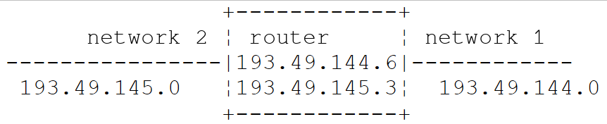
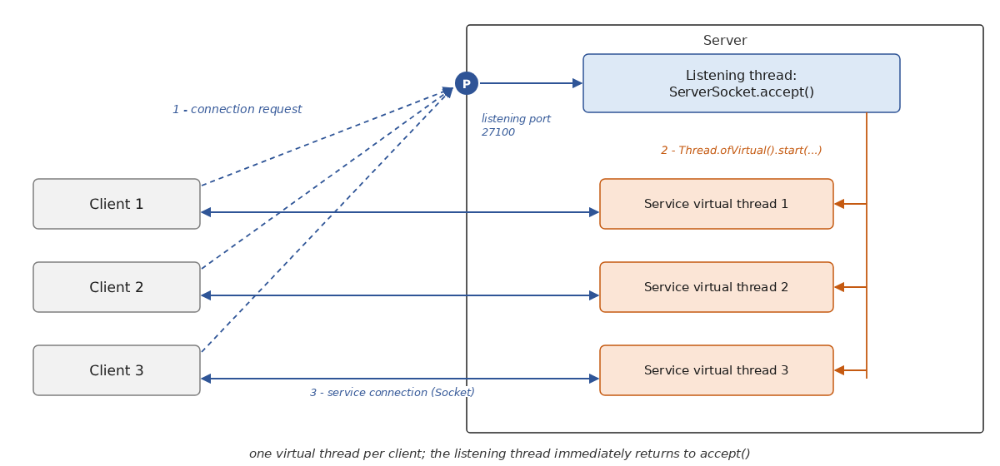
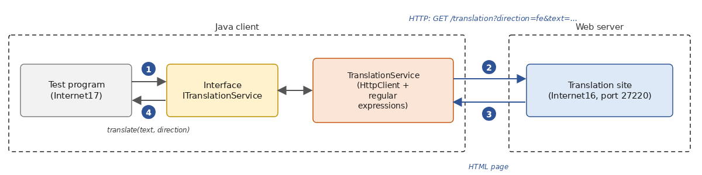

12. Programación web
Requisitos previos: la versión 8 de la [Tax] application, descrita al final de este capítulo, reutiliza los [tax-dao], [tax-business] y [tax-ui] módulos de la versión 5 (capítulo 6). Antes de compilar o abrir sus proyectos, debe haber instalado la versión 5 en el repositorio local de Maven mediante el comando [mvn install] ejecutado en la carpeta [06-architectures/TaxV5] (véase el capítulo 6, sección sobre [mvn install]).
12.1. Información general
12.1.1. Protocolos de Internet
Aquí presentamos una introducción a los protocolos de comunicación de Internet, también conocidos como la suite de protocolos TCP/IP (Transmission Control Protocol / Internet Protocol), llamada así por los dos protocolos principales. Conviene que el lector tenga una comprensión general del funcionamiento de las redes (y en particular de los protocolos TCP/IP) antes de abordar el desarrollo de aplicaciones distribuidas. Esta presentación se basa en un texto de la guía de administración «Lan Workplace for DOS» de Novell (principios de la década de 1990), conservando su estructura y espíritu pero actualizándolo: la Internet de 2026 ya no es del todo la misma que la de 1990.
El concepto general de crear una red de computadoras heterogéneas surge de la investigación realizada por la DARPA (Defense Advanced Research Projects Agency) en Estados Unidos. La DARPA desarrolló la suite de protocolos conocida como TCP/IP, que permite que máquinas heterogéneas se comuniquen entre sí. Estos protocolos se probaron en una red llamada ARPAnet, red que luego se convirtió en Internet (ARPAnet adoptó TCP/IP el 1 de enero de 1983). Los protocolos TCP/IP definen formatos y reglas de transmisión y recepción que son independientes de la arquitectura de la red y del hardware utilizado.
La red diseñada por la DARPA y gestionada por los protocolos TCP/IP es una red de conmutación de paquetes. Una red de este tipo transmite la información en pequeños fragmentos llamados paquetes. Así, si una computadora transmite un archivo grande, este se dividirá en pequeños fragmentos que se envían por la red para ser reensamblados en el destino. TCP/IP define el formato de estos paquetes, incluyendo, en particular:
- el origen del paquete;
- su destino;
- su longitud;
- su tipo.
Los protocolos de Internet se describen en documentos públicos llamados RFC (Request for Comments), publicados por la IETF (Internet Engineering Task Force) y disponibles en www.rfc-editor.org. Citaremos algunos de estos documentos a lo largo de este capítulo.
12.1.2. El modelo OSI
Los protocolos TCP/IP siguen en líneas generales el modelo de red abierto conocido como OSI (Open Systems Interconnection Reference Model), definido por la ISO (International Organization for Standardization). Este modelo describe una red ideal en la que la comunicación entre máquinas puede representarse mediante un modelo de siete capas:

Cada capa recibe servicios de la capa inferior y presta sus propios servicios a la capa superior. Supongamos que dos aplicaciones ubicadas en máquinas diferentes, A y B, desean comunicarse: lo hacen en la capa de Aplicación. No necesitan conocer todos los detalles del funcionamiento de la red: cada aplicación entrega la información que desea transmitir a la capa inferior, la capa de Presentación. La aplicación solo necesita, por lo tanto, conocer las reglas de interfaz con la capa de Presentación. Una vez que la información está en la capa de Presentación, se pasa según otras reglas a la capa de Sesión, y así sucesivamente, hasta que la información llega al medio físico y se transmite físicamente a la máquina de destino. Allí, sufrirá el proceso inverso al que sufrió en la máquina emisora.
En cada capa, el proceso emisor encargado de enviar la información la envía a un proceso receptor de la otra máquina que pertenece a la misma capa. Lo hace según ciertas reglas conocidas como el protocolo de la capa. La comunicación real desciende a través de las capas de la máquina A, atraviesa la red física y luego asciende a través de las capas de la máquina B; sin embargo, cada capa percibe que se comunica directamente con la capa correspondiente de la otra máquina.
Las funciones de las diferentes capas son las siguientes:
Capa | Función |
Física | Asegura la transmisión de bits a través de un medio físico (cable de cobre, cable de fibra óptica, ondas de radio). Entre las consideraciones clave en este nivel se encuentran la codificación de la información en señales y el método de transmisión. |
Enlace de datos | Abstrae las características físicas de la capa Física. Divide la información en tramas, detecta (y a veces corrige) los errores de transmisión y gestiona el acceso al medio compartido. |
Red | Gestiona la ruta que debe seguir la información enviada por la red. Esto se denomina enrutamiento: determinar el camino que debe tomar la información para llegar a su destino. |
Transporte | Permite la comunicación entre dos aplicaciones, mientras que las capas anteriores solo permitían la comunicación entre máquinas. Un servicio que presta esta capa es la multiplexación: la capa de transporte utiliza un único enlace de red (de máquina a máquina) para transmitir datos pertenecientes a varias aplicaciones. |
Sesión | Proporciona servicios que permiten a una aplicación abrir y mantener una sesión de trabajo en una máquina remota. |
Presentación | Estandariza la representación de los datos entre diferentes máquinas. Los datos de la máquina A son «formateados» por la capa de Presentación de la máquina A según un formato estándar antes de enviarse por la red. Una vez que llegan a la capa de Presentación de la máquina de destino B (que los reconoce por su formato estándar), los datos se reformatean para que la aplicación de la máquina B pueda reconocerlos. |
Aplicación | En este nivel se encuentran las aplicaciones que, por lo general, están más cerca del usuario, como el correo electrónico, la Web o la transferencia de archivos. |
12.1.3. El modelo TCP/IP
El modelo OSI es un modelo de referencia que nunca se implementó tal cual. La suite de protocolos TCP/IP, que se ha convertido en el estándar, está organizada en solo cuatro capas:

Las capas de Sesión y de Presentación no existen como tales en TCP/IP: sus funciones, cuando son necesarias, las asumen las propias aplicaciones o protocolos intermedios como TLS (cifrado de los intercambios de datos), que se inserta entre TCP y la aplicación.
La capa de acceso a la red
En las redes de área local, la tecnología dominante hoy en día es Ethernet para las conexiones cableadas y Wi-Fi (estándares IEEE 802.11) para las inalámbricas. Otras tecnologías, como Token Ring, han desaparecido.
Ethernet es el nombre que recibe una tecnología de red de área local de conmutación de paquetes inventada en Xerox a principios de la década de 1970 y estandarizada por Xerox, Intel y Digital Equipment en 1980, y posteriormente por el IEEE (estándar 802.3). La Ethernet original consistía en un cable coaxial al que se conectaban todas las máquinas (topología de bus), con una velocidad de transmisión de 10 megabits por segundo:

Era una red de difusión: una máquina transmisora enviaba por el cable información que incluía la dirección de la máquina receptora; todas las máquinas conectadas la recibían, y solo el destinatario la retenía. Como varias máquinas podían decidir transmitir al mismo tiempo, era necesario detectar las colisiones: este era el método de acceso CSMA/CD (Carrier Sense Multiple Access / Collision Detect). Cada transmisor escuchaba el cable antes de transmitir (CSMA) y, mientras transmitía, verificaba que lo que pasaba por el cable fuera efectivamente lo que había transmitido; de lo contrario, se había producido una colisión (CD): cada uno dejaba de transmitir e intentaba de nuevo tras un retardo aleatorio.
La Ethernet moderna ha evolucionado considerablemente: los dispositivos se conectan mediante cables de par trenzado o de fibra óptica a un conmutador (switch), que dirige cada trama al puerto específico del destinatario. Las conexiones son full-duplex (transmisión y recepción simultáneas): ya no hay colisiones, y CSMA/CD ha quedado obsoleto. Las velocidades típicas van de 1 a 10 gigabits por segundo, y mucho más en los centros de datos.
Lo que no ha cambiado es el direccionamiento de 48 bits: cada tarjeta de red tiene una dirección, llamada dirección física o dirección MAC (Media Access Control), generalmente escrita como seis bytes hexadecimales (por ejemplo, [00:1A:2B:3C:4D:5E]). El fabricante la programa en la tarjeta pero, contrariamente a lo que se ha afirmado durante mucho tiempo, puede modificarse mediante software: los sistemas operativos modernos incluso usan direcciones MAC aleatorias en las redes Wi-Fi para evitar que un dispositivo sea rastreado de una red a otra.
La capa de Internet (capa de red)
En esta capa encontramos los siguientes protocolos:
Protocolo | Función |
IP (Internet Protocol) | entrega paquetes entre dos nodos de la red, en la versión 4 (IPv4) o 6 (IPv6) |
ICMP (Internet Control Message Protocol) | facilita la comunicación entre el programa del protocolo IP de una máquina y el de otra máquina. Es, por lo tanto, un protocolo de intercambio de mensajes de control dentro del propio protocolo IP |
ARP (Address Resolution Protocol) | asocia la dirección IP de una máquina con la dirección física de la máquina (en IPv6, esta función la realiza el protocolo NDP, Neighbor Discovery Protocol) |
También se menciona a veces RARP (Reverse Address Resolution Protocol), que realizaba la asociación inversa. Está obsoleto desde hace mucho tiempo en favor de DHCP, del que hablaremos más adelante.
La capa de transporte
Esta capa incluye los siguientes protocolos:
Protocolo | Función |
TCP (Transmission Control Protocol) | asegura la entrega confiable y ordenada de información entre dos aplicaciones |
UDP (User Datagram Protocol) | asegura la entrega no confiable de información entre dos aplicaciones |
El protocolo QUIC (2021), en el que se basa HTTP/3, es un protocolo de transporte confiable y cifrado construido sobre UDP.
La capa de aplicación
Aquí encontramos diversos protocolos, que detallaremos un poco más adelante:
Protocolo | Función |
HTTP, HTTPS (HyperText Transfer Protocol) | El protocolo de la Web: un cliente (navegador, aplicación) solicita recursos a un servidor web. HTTPS es HTTP cifrado mediante TLS |
DNS (Domain Name System) | convierte un nombre de host en una dirección IP |
SMTP (Simple Mail Transfer Protocol) | permite el envío de correos electrónicos |
POP3, IMAP | permiten leer el correo electrónico almacenado en un servidor |
SSH (Secure Shell) | permite conectarse a una máquina remota y ejecutar comandos en ella, mediante cifrado. Reemplazó a TELNET, que cumplía la misma función sin cifrado |
FTP (File Transfer Protocol), SFTP | permiten la transferencia de archivos |
DHCP (Dynamic Host Configuration Protocol) | permite que una máquina obtenga automáticamente su dirección IP y su configuración de red |
12.1.4. Cómo funcionan los protocolos de Internet
Las aplicaciones desarrolladas en el entorno TCP/IP suelen utilizar varios de los protocolos de este entorno. Un programa de aplicación se comunica con la capa más alta de los protocolos. Esta capa pasa la información a la capa inferior, y así sucesivamente, hasta que llega al medio físico. Allí, la información se transfiere físicamente a la máquina receptora, donde atravesará las mismas capas, esta vez en sentido inverso, hasta llegar a la aplicación destinataria de la información enviada. El siguiente diagrama muestra la ruta de la información:

Veamos un ejemplo: una aplicación que envía un archivo a otra máquina mediante TCP.
- La aplicación entrega a la capa de transporte una secuencia de bytes que se debe transmitir;
- la capa de transporte divide esta secuencia de bytes en segmentos TCP y agrega al comienzo de cada segmento un encabezado que contiene, entre otras cosas, los números de puerto de origen y destino, así como un número de secuencia. Los segmentos se pasan a la capa de red, regida por el protocolo IP;
- la capa IP crea un paquete que encapsula el segmento TCP recibido. En el encabezado de este paquete coloca las direcciones IP de las máquinas de origen y destino. También determina la dirección física de la máquina a la que se debe entregar el paquete (el propio destino o un enrutador). El paquete completo se pasa a la capa de acceso a la red, es decir, a la tarjeta de red que conecta la máquina con la red física;
- allí, el paquete IP es encapsulado a su vez en una trama física y enviado a su destinatario a través del medio;
- en la máquina de destino, la capa de acceso a la red realiza el proceso inverso: desencapsula el paquete IP de la trama física y lo pasa a la capa IP;
- la capa IP verifica que el paquete sea válido: calcula una suma de verificación de su encabezado, que debe coincidir con la que figura en el encabezado del paquete. Si no es así, el paquete se descarta;
- si el paquete se considera válido, la capa IP desencapsula el segmento TCP que contiene y lo pasa hacia arriba, a la capa de transporte;
- la capa TCP también verifica una suma de verificación del segmento. Si es correcta, envía un acuse de recibo a la máquina de origen; de lo contrario, el segmento se ignora (y la fuente lo reenviará);
- mediante los números de secuencia, la capa TCP reordena los segmentos en el orden correcto;
- lo único que le queda por hacer a la capa TCP es transmitir la porción de datos de los segmentos a la aplicación de destino, identificada por el número de puerto de destino.
12.1.5. Problemas de direccionamiento en Internet
Un nodo de red puede ser una computadora, una impresora, un teléfono, un dispositivo conectado; en realidad, cualquier cosa que pueda comunicarse mediante los protocolos TCP/IP. Cada nodo tiene una dirección física cuyo formato depende del tipo de red. En una red Ethernet o Wi-Fi, la dirección física se codifica con 6 bytes.
La dirección de Internet (IP) de un nodo es una dirección lógica: es independiente del hardware y de la red utilizada. En IPv4, es una dirección de 4 bytes que identifica tanto una red como un nodo de esa red. Normalmente se representa como cuatro números (los valores de los cuatro bytes) separados por un punto. Por ejemplo, la dirección de la máquina llamada «Lagaffe» de la Facultad de Ciencias de Angers fue durante mucho tiempo 193.49.144.1, y la de la máquina llamada «Liny» era 193.49.144.9. De ello se podía deducir que la dirección de la red local era 193.49.144.0 y que podía haber hasta 254 nodos en esa red.
Como las direcciones IP son independientes de la red física, una máquina de la red A puede comunicarse con una máquina de la red B sin preocuparse por el tipo de red en que esta se encuentre: solo necesita conocer su dirección IP. El protocolo IP de cada red se encarga de la conversión entre direcciones IP y direcciones físicas en ambos sentidos.
Todas las direcciones IP públicas deben ser únicas. Su asignación sigue una estructura jerárquica: la IANA (Internet Assigned Numbers Authority) distribuye bloques de direcciones a cinco registros regionales, entre ellos el RIPE NCC para Europa, que las redistribuyen a operadores y grandes organizaciones. Estas entidades las asignan luego a sus clientes. El administrador de una red que ha recibido el bloque de 193.49.144.0 a 193.49.144.255 puede asignar las direcciones de 193.49.144.1 a 193.49.144.254 como mejor le parezca. En Francia, el INRIA fue durante mucho tiempo responsable de asignar las direcciones; hace bastante tiempo que ya no es así.
12.1.5.1. Las clases de direcciones IP y la notación CIDR
Una dirección IPv4 es una secuencia de 4 bytes denotada como I1.I2.I3.I4, que en realidad contiene dos informaciones:
- la dirección de la red (los bits más significativos);
- la dirección de un nodo dentro de esa red (los bits menos significativos).
Originalmente, el tamaño de estos dos campos se determinaba por el valor del primer byte. Las direcciones IP se dividían en tres clases principales:
Clase | Primer byte | Red / Nodo | Número de redes y de nodos |
A | 1 a 126 (bit más significativo 0) | R1.N1.N2.N3: red de 1 byte (7 bits significativos), nodo de 3 bytes | 126 redes de 2²⁴ - 2 nodos (aproximadamente 16 millones) |
B | 128 a 191 (10 bits más significativos) | R1.R2.N1.N2: red de 2 bytes (14 bits significativos), nodo de 2 bytes | 2¹⁴ = 16 384 redes de 2¹⁶ - 2 = 65 534 nodos |
C | 192 a 223 (110 bits más significativos) | R1.R2.R3.N1: red de 3 bytes (21 bits significativos), nodo de 1 byte | 2²¹ redes (aproximadamente 2 millones) con 254 nodos |
Como la dirección de la máquina Lagaffe es 193.49.144.1, el byte más significativo es 193, que en binario es 11000001: la red era una red de clase C.
Esta clasificación resultó ser demasiado rígida: una organización con 300 máquinas debía usar una red de clase B, desperdiciando más de 65 000 direcciones. Desde 1993 (RFC 1518 y 1519), las clases se han abandonado en favor del enrutamiento sin clases (CIDR, Classless Inter-Domain Routing). El límite entre la parte de red y la parte de host puede fijarse en cualquier bit; se indica mediante la longitud del prefijo de red, a continuación de una barra diagonal:
- 193.49.144.0/24: los primeros 24 bits designan la red y los últimos 8 bits designan el nodo. Esta red contiene las direcciones de 193.49.144.0 a 193.49.144.255;
- 10.0.0.0/8: una red con 2²⁴ direcciones;
- 192.168.1.0/26: una red de 2⁶ = 64 direcciones, que van de 192.168.1.0 a 192.168.1.63.
Todavía se usa la notación antigua de la máscara de subred, que expresa lo mismo: el prefijo /24 corresponde a la máscara 255.255.255.0. Los términos “clase A, B, C” siguen siendo de uso común, pero ya no corresponden a ningún mecanismo real.
12.1.5.2. Direcciones reservadas, direcciones privadas y NAT
Ciertas direcciones tienen un propósito específico:
- una dirección cuya parte de host está formada únicamente por 0 designa a la propia red: 193.49.144.0 es la dirección de la red 193.49.144.0/24;
- una dirección cuya parte de host está formada únicamente por 1 es una dirección de difusión (broadcast): 193.49.144.255 designa a todos los hosts de la red 193.49.144.0/24. Por lo tanto, estas dos direcciones no pueden asignarse a un nodo: una red /24 con 256 direcciones ofrece solo 254 direcciones utilizables;
- las direcciones 127.0.0.0/8, y en la práctica 127.0.0.1, son direcciones de bucle local (loopback): una máquina las usa para referirse a sí misma sin pasar por la red. El nombre [localhost] está asociado a ellas;
- los bloques 10.0.0.0/8, 172.16.0.0/12 y 192.168.0.0/16 (RFC 1918) están reservados para redes privadas: pueden usarse libremente dentro de una empresa o un hogar, pero no se enrutan en Internet;
- los bloques 192.0.2.0/24, 198.51.100.0/24 y 203.0.113.0/24 (RFC 5737) están reservados para documentación y ejemplos.
El número de direcciones IPv4 (2³², o poco más de 4 mil millones) es insuficiente para todas las máquinas conectadas. El fondo central de direcciones de IANA se agotó en 2011, y el de RIPE NCC en 2019. La escasez se sorteó mediante la traducción de direcciones de red (NAT, Network Address Translation): los dispositivos de un hogar tienen direcciones privadas (como 192.168.1.x), y el enrutador que los conecta a Internet las “traduce” a su propia dirección pública única. La solución a largo plazo es IPv6.
12.1.5.3. Las direcciones IPv6
IPv6 (RFC 2460 en 1998, hoy RFC 8200) codifica las direcciones en 128 bits, lo que ofrece 2¹²⁸ direcciones posibles —aproximadamente 3,4 × 10³⁸—, por lo que ya no hay que preocuparse por la escasez. Una dirección IPv6 se escribe como ocho grupos de cuatro dígitos hexadecimales separados por dos puntos:
Los ceros iniciales de cada grupo pueden omitirse, y una única secuencia de grupos de ceros puede reemplazarse por [::]. La dirección anterior se escribe entonces [2001:db8::8a2e:0:370:7334]. La dirección de bucle local, equivalente a 127.0.0.1, es [::1]. En una URL, la dirección IPv6 se coloca entre corchetes para evitar confundir sus dos puntos con los que preceden al puerto: [http://[::1]:8080/].
IPv6 introduce otras simplificaciones: el encabezado del paquete tiene longitud fija, la configuración automática de direcciones está integrada de forma predeterminada y la traducción de direcciones NAT deja de ser necesaria. Su adopción ha sido lenta, pero una parte significativa y creciente del tráfico de Internet pasa ya por IPv6 (Google, por ejemplo, publica la proporción de sus usuarios que acceden mediante IPv6), y los principales proveedores de acceso franceses lo ofrecen a sus abonados. Ambas versiones coexisten: la mayoría de las máquinas tienen direcciones IPv4 e IPv6 (se habla entonces de “doble pila”, o dual stack), y los programas deben ser capaces de manejar ambas.
12.1.5.4. Protocolos de conversión de direcciones: IP ↔ dirección física
Hemos visto que, cuando se transmiten datos de una máquina a otra, al pasar por la capa IP estos se encapsulan en paquetes. Estos paquetes tienen la siguiente forma:

El paquete IP contiene, por lo tanto, las direcciones IP de las máquinas de origen y de destino. Cuando este paquete se entrega a la capa encargada de enviarlo por la red física, se le añade información adicional para formar la trama física que finalmente se enviará por la red. Por ejemplo, el formato de una trama en una red Ethernet es el siguiente:

Los primeros 8 bytes (preámbulo) sirven para la sincronización; el campo de 2 bytes que precede a los datos indica, en la forma más común de la trama Ethernet, el tipo de protocolo transportado (IPv4, IPv6, ARP…) en lugar de la longitud del paquete. En la trama final se encuentran las direcciones físicas de las máquinas de origen y de destino (en la trama real, la dirección de destino precede a la de origen, a diferencia del orden que muestra el diagrama). ¿Cómo se obtienen?
La máquina emisora, que conoce la dirección IP de la máquina con la que desea comunicarse, obtiene la dirección física de esta mediante el protocolo ARP (Address Resolution Protocol):
- envía un tipo especial de paquete, llamado paquete ARP, que contiene la dirección IP de la máquina cuya dirección física se busca. También incluye su propia dirección IP, así como su dirección física;
- este paquete se envía a todos los nodos de la red local (broadcast);
- estos nodos reconocen la naturaleza especial del paquete. El nodo que reconoce su dirección IP en el paquete responde enviando su dirección física al emisor. Puede hacerlo porque encontró en el paquete la dirección IP y la dirección física del emisor;
- El emisor recibe así la dirección física que buscaba. La almacena en un caché para poder usarla más adelante si es necesario enviar otros paquetes al mismo destinatario.
En IPv6, el mismo servicio lo presta el protocolo NDP (Neighbor Discovery Protocol), que se apoya en mensajes ICMPv6.
Queda una pregunta: ¿cómo conoce una máquina su propia dirección IP? Puede indicarse en un archivo de configuración de la máquina; esta sigue siendo la práctica en los servidores. Pero cuando un administrador necesita reorganizar la red, modificar uno por uno los archivos de configuración de todas las máquinas es tedioso y propenso a errores. El protocolo RARP permitía antes que una máquina solicitara su dirección IP a un servidor a partir de su dirección física. Ha sido reemplazado por DHCP (Dynamic Host Configuration Protocol, RFC 2131): al arrancar, la máquina difunde una solicitud por la red; un servidor (como un enrutador doméstico o un servidor dedicado en una empresa) le asigna una dirección por un tiempo limitado (un arrendamiento, o lease), junto con el resto de su configuración: prefijo de red, dirección del enrutador y direcciones de los servidores DNS. El administrador solo tiene entonces que configurar el servidor DHCP. En IPv6, una máquina también puede construir su propia dirección a partir del prefijo anunciado por el enrutador (autoconfiguración SLAAC).
12.1.6. La capa de red, conocida como capa IP, de Internet
El protocolo IP define el formato que deben tener los paquetes y cómo deben tratarse al enviarse o recibirse. Este tipo particular de paquete se denomina datagrama IP. Ya hemos hablado de él:
Lo importante es que, además de los datos que se van a transmitir, el datagrama IP contiene las direcciones IP de las máquinas de origen y de destino. De este modo, la máquina de destino sabe quién le envía un mensaje.
A diferencia de una trama de red, cuya longitud viene determinada por las características físicas de la red por la que viaja, la longitud del datagrama IP la fija el software y, por lo tanto, será la misma en redes físicas distintas. Hemos visto que, al descender de la capa de red a la capa física, el datagrama IP se encapsula en una trama física.
Las tramas físicas viajan de nodo en nodo hacia su destino, que puede no estar en la misma red física que la máquina emisora. El paquete IP puede, por lo tanto, encapsularse sucesivamente en distintas tramas físicas en los nodos que conectan dos redes de tipos diferentes. También es posible que el paquete IP sea demasiado grande para encapsularse en una trama física (la carga útil de una trama Ethernet está limitada a 1500 bytes). En IPv4, el nodo en el que surge este problema divide entonces el paquete IP en fragmentos, que solo se reensamblarán en su destino final. En IPv6, los enrutadores ya no fragmentan los paquetes: corresponde al emisor determinar el tamaño máximo aceptado a lo largo de la ruta y ajustar en consecuencia el tamaño de sus paquetes.
12.1.6.1. Enrutamiento
El enrutamiento es el método para dirigir los paquetes IP hacia su destino. Existen dos métodos: el enrutamiento directo y el enrutamiento indirecto.
Enrutamiento directo
El enrutamiento directo consiste en la transmisión de un paquete IP directamente del emisor al destinatario dentro de una misma red:
- la máquina que envía un datagrama IP conoce la dirección IP del destinatario;
- obtiene la dirección física del destinatario mediante el protocolo ARP, o desde su caché si ya la había obtenido;
- envía el paquete por la red a esa dirección física.
Enrutamiento indirecto
El enrutamiento indirecto consiste en la transmisión de un paquete IP hacia un destino situado en una red distinta de aquella a la que pertenece el emisor. En este caso, las partes de “red” de las direcciones IP de las máquinas de origen y de destino son diferentes; la máquina de origen lo detecta comparando la dirección de destino con su propio prefijo de red. Entonces envía el paquete a un nodo especial llamado enrutador, que conecta la red local con otras redes y cuya dirección IP conoce la máquina de origen (es lo que se denomina puerta de enlace predeterminada, que normalmente proporciona DHCP). Un enrutador está conectado al menos a dos redes y tiene una dirección IP en cada una de ellas:

En nuestro ejemplo anterior:
- La red n.º 1 tiene la dirección 193.49.144.0/24 y la red n.º 2 tiene la dirección 193.49.145.0/24;
- dentro de la red n.º 1, el enrutador tiene la dirección 193.49.144.6, y dentro de la red n.º 2, tiene la dirección 193.49.145.3.
La función del enrutador es tomar el paquete IP que recibe —contenido en una trama física de la red n.º 1— y colocarlo en una trama física que pueda viajar por la red n.º 2. Si la dirección IP de destino del paquete está en la red n.º 2, el enrutador enviará el paquete directamente a ella; de lo contrario, lo enviará a otro enrutador que conecte la red n.º 2 con la red n.º 3, y así sucesivamente. Los enrutadores de Internet intercambian constantemente información sobre las redes a las que pueden llegar (protocolos de enrutamiento como BGP entre operadores) para construir sus tablas de enrutamiento.
12.1.6.2. Mensajes de error y de control
También en la capa de red —y por lo tanto al mismo nivel que el protocolo IP— se encuentra el protocolo ICMP (Internet Control Message Protocol). Sirve para enviar mensajes sobre el funcionamiento interno de la red: nodo inalcanzable, paquete que ha atravesado demasiados enrutadores, etc. Los mensajes ICMP se encapsulan en paquetes IP y se envían por la red. Las capas IP de los distintos nodos toman las medidas apropiadas según los mensajes ICMP que reciben. Así, una aplicación nunca ve por sí misma estos problemas propios de la red. Los comandos [ping] (que envían mensajes ICMP “Echo Request” y esperan mensajes “Echo Reply”) y [traceroute] / [tracert] (que muestra los enrutadores atravesados) se basan en ICMP.
12.1.7. La capa de transporte: los protocolos UDP y TCP
12.1.7.1. El protocolo UDP: User Datagram Protocol
El protocolo UDP permite un intercambio de datos no fiable entre dos puntos; es decir, no se garantiza que un paquete llegue con éxito a su destino, ni el orden en que llegan los paquetes. La aplicación, si lo desea, puede encargarse de ello por sí misma; por ejemplo, esperando un acuse de recibo después de enviar un mensaje antes de enviar el siguiente.
Hasta ahora, en el nivel de red, hemos tratado direcciones de máquinas como IP. Sin embargo, en una misma máquina pueden coexistir al mismo tiempo distintos procesos, y todos ellos pueden comunicarse entre sí. Por lo tanto, al enviar un mensaje, hay que especificar no solo la dirección IP de la máquina de destino, sino también el “nombre” del proceso de destino. Este nombre es en realidad un número de 16 bits (de 1 a 65 535), llamado número de puerto. Ciertos números están reservados para aplicaciones estándar: el puerto 53 para DNS, el 80 para HTTP, el 443 para HTTPS, el 25 para SMTP, etc. Los puertos inferiores a 1024 se denominan “bien conocidos”; en Linux se requieren privilegios especiales para iniciar un servicio en uno de ellos. Los ejemplos de este capítulo usan puertos en los rangos 27100–27199 y 27200–27299.
Los paquetes manejados por el protocolo UDP se denominan datagramas. Tienen la siguiente forma:

Estos datagramas se encapsulan en paquetes IP y luego en tramas físicas. UDP se utiliza cuando la velocidad importa más que la fiabilidad, o cuando la aplicación gestiona por sí misma las pérdidas: DNS (una pregunta, una respuesta), la transmisión de audio y video en vivo, los juegos en línea y el protocolo QUIC de HTTP/3.
12.1.7.2. El protocolo TCP: Transmission Control Protocol
Para comunicaciones seguras, el protocolo UDP es insuficiente: el desarrollador de la aplicación debe crear por sí mismo un protocolo que verifique que los paquetes se enrutan correctamente. El protocolo TCP evita estos problemas. Sus características son las siguientes:
- El proceso que desea transmitir datos establece primero una conexión con el proceso que recibirá la información que está a punto de transmitir. Esta conexión se establece entre un puerto de la máquina emisora y un puerto de la máquina receptora mediante un intercambio de tres segmentos (SYN, SYN-ACK, ACK: el “acuerdo de tres pasos”, o three-way handshake). Así se crea un circuito virtual entre los dos puertos, que quedará reservado exclusivamente para los dos procesos que establecieron la conexión;
- todos los bytes transmitidos por el proceso de origen llegan a su destino en el orden en que fueron enviados, lo cual el protocolo UDP no garantiza, ya que los paquetes pueden seguir caminos distintos;
- La información transmitida aparece como continua: es un flujo de bytes. El proceso emisor transmite la información a su propio ritmo. Esta información no se envía necesariamente de inmediato: el protocolo TCP puede esperar hasta tener suficientes datos para enviar. Se coloca en una estructura llamada segmento TCP. Una vez lleno este segmento, se transmite a la capa IP, donde se encapsula en un paquete IP. Una consecuencia importante para el programador: una “línea” enviada de una sola vez puede llegar en varios fragmentos, y varias líneas pueden llegar juntas. Corresponde a la aplicación identificar los límites de sus mensajes (para ello usaremos el carácter de fin de línea);
- Cada segmento enviado por el protocolo TCP está numerado. El protocolo TCP receptor verifica que recibe los segmentos en secuencia. Por cada segmento recibido correctamente, envía un acuse de recibo al emisor;
- si, transcurrido cierto tiempo, el protocolo TCP que envió un segmento no recibe un acuse de recibo, retransmite el segmento en cuestión, garantizando así la calidad del servicio de entrega de la información;
- El circuito virtual establecido entre los dos procesos que se comunican es full-duplex: la información puede viajar en ambas direcciones simultáneamente. Así, el proceso de destino puede enviar acuses de recibo incluso mientras el proceso de origen sigue enviando información. Esto permite, por ejemplo, que el protocolo TCP de origen envíe varios segmentos sin esperar acuses de recibo. Si, transcurrido cierto tiempo, advierte que no ha recibido el acuse de recibo de un segmento concreto n.º n, reanudará el envío de segmentos a partir de ese punto;
- TCP también regula su tasa de transferencia de datos para evitar sobrecargar al receptor (control de flujo) o a la red (control de congestión).
12.1.8. La capa de aplicación
Por encima de los protocolos UDP y TCP existen diversos protocolos estándar:
TELNET y SSH
TELNET permite que un usuario de la máquina A se conecte a la máquina B (a menudo llamada máquina host) como si tuviera un terminal conectado a esa máquina. TELNET se basa en TCP. Sus intercambios de datos, incluidas las contraseñas, se transmiten en texto plano: ha sido reemplazado por SSH (Secure Shell), que ofrece el mismo servicio de forma cifrada y que también se usa para la transferencia segura de archivos (SFTP, SCP) y para crear túneles. El programa cliente [telnet] ha sido durante mucho tiempo una herramienta cómoda para comunicarse “manualmente” con un servidor TCP: veremos cómo reemplazarlo.
FTP (File Transfer Protocol)
Este protocolo permite el intercambio de archivos entre dos máquinas remotas, así como operaciones con archivos como la creación de directorios. Se basa en el protocolo TCP. Al igual que TELNET, transmite las contraseñas en texto plano; está siendo abandonado en favor de SFTP y HTTPS.
TFTP (Trivial File Transfer Protocol)
Este protocolo es una variante simplificada de FTP. Se basa en el protocolo UDP. Todavía se utiliza para arrancar máquinas a través de la red.
DNS (Domain Name System)
Cuando un usuario quiere intercambiar información con una máquina remota, debe conocer la dirección IP de esa máquina. Resulta mucho más cómodo referirse a una máquina por un nombre que por su dirección IP. Esto plantea el problema de la unicidad de los nombres: hay miles de millones de máquinas interconectadas. Podría imaginarse una autoridad centralizada que asignara los nombres, pero sería muy engorroso. El control sobre los nombres se ha distribuido en dominios. Cada dominio es administrado por una organización que tiene plena libertad para elegir los nombres dentro de su dominio. Así, las máquinas de Francia pertenecen a menudo al dominio [fr], administrado por AFNIC (INRIA lo administró hasta la creación de AFNIC en 1997). Para simplificar aún más las cosas, el control se descentraliza todavía más: se crean dominios dentro del dominio [fr]. Por ejemplo, la Universidad de Angers posee el dominio [univ-angers.fr]; el departamento que lo administra tiene plena libertad para asignar nombres a las computadoras de la red de la universidad y para crear subdominios.
El nombre completo de una máquina (FQDN, Fully Qualified Domain Name) especifica la jerarquía de dominios a la que pertenece, del más específico al más general: [www.univ-angers.fr]. Dentro de un dominio, a menudo pueden usarse nombres relativos, que el sistema completa automáticamente.
Una aplicación puede, por lo tanto, referirse a una máquina por su nombre. Sin embargo, en última instancia sigue siendo necesario obtener la dirección IP de esa máquina. Supongamos que se desea comunicar de la máquina A a la máquina B:
- La máquina A consulta primero un archivo local de correspondencias ([/etc/hosts] en Linux y macOS, [C:\Windows\System32\drivers\etc\hosts] en Windows) y luego su caché;
- si no, consulta al servidor DNS, cuya dirección figura en su configuración (normalmente proporcionada por DHCP). Le envía una solicitud DNS que contiene el nombre de la máquina buscada. Si el servidor consultado conoce la respuesta o la tiene en caché, devuelve la dirección IP correspondiente a la máquina A. De lo contrario, consulta a su vez —a partir de los servidores raíz— a los servidores responsables del dominio [fr], luego de [univ-angers.fr], y así sucesivamente, hasta obtener la respuesta, que luego se retransmitirá hasta la máquina A.
El dominio DNS asocia distintos tipos de registros a un nombre: A (dirección IPv4), AAAA (dirección IPv6), CNAME (alias de otro nombre), MX (servidores de correo del dominio), etc.
HTTP y HTTPS (HyperText Transfer Protocol)
Este es el protocolo de la Web, y con mucho el más utilizado hoy en día: no solo por los navegadores, sino también por las aplicaciones que intercambian datos (los servicios web de los que se habla en el próximo capítulo). Lo examinaremos en detalle. HTTPS es HTTP transmitido sobre una conexión cifrada mediante TLS (Transport Layer Security); esta es hoy la forma estándar de la Web.
SMTP, POP3 e IMAP
SMTP se usa para enviar correos electrónicos, mientras que POP3 e IMAP se usan para leer los correos almacenados en un servidor. También hablaremos de ellos.
XDR, RPC, NFS
Por último, mencionemos tres protocolos definidos por Sun Microsystems, la empresa que creó Java: XDR (eXternal Data Representation), que especifica una representación de datos estándar e independiente de la máquina; RPC (Remote Procedure Call), un protocolo de llamada a procedimientos remotos basado en XDR; y NFS (Network File System), que permite que una máquina “vea” el sistema de archivos de otra y se basa en RPC. NFS sigue en uso en el mundo Unix. El concepto de llamada a procedimientos remotos ha sido adoptado por muchos sucesores; hoy en día, estos incluyen los servicios web REST (basados en HTTP) y gRPC (basado en HTTP/2).
12.1.9. Conclusión
En esta introducción hemos presentado algunas de las principales características de los protocolos de Internet. Para explorar este campo con mayor profundidad, el lector puede consultar la obra fundamental de Douglas Comer, *Internetworking with TCP/IP, Volume 1 ” (Pearson, 6.ª edición) —cuyas ediciones anteriores se tradujeron al francés—, así como las RFC citadas en este capítulo. Para HTTP, la documentación de Mozilla en developer.mozilla.org/en-US/docs/Web/HTTP es una excelente introducción.
12.2. Clases Java para la gestión de direcciones IP
Una máquina en Internet se identifica mediante una dirección IP, que puede adoptar dos formas:
- IPv4: codificada en 32 bits y representada por una cadena de la forma "I1.I2.I3.I4", donde In es un número entre 0 y 255;
- IPv6: codificada en 128 bits y representada por una cadena de ocho grupos de dígitos hexadecimales separados por dos puntos, como "2001:db8::8a2e:370:7334". Hoy ya no podemos ignorar estas direcciones: nuestros programas las aceptarán.
Una máquina también puede identificarse mediante un nombre. Este nombre no es obligatorio, ya que las aplicaciones usan en última instancia siempre las direcciones IP de las máquinas. Los nombres están ahí para facilitar la vida a los usuarios: es más fácil pedirle a un navegador la URL [https://dev.java] que la URL formada a partir de una de las direcciones IP de este sitio, que, dicho sea de paso, cambia según el lugar desde el que se haga la solicitud.
Una máquina puede tener varias direcciones IP: una dirección de bucle local, una dirección por cada red a la que está conectada, y direcciones IPv4 e IPv6.
Una dirección IP puede representarse de dos maneras en Java:
- como una cadena como "I1.I2.I3.I4" o "2001:db8::1";
- como un objeto de tipo [InetAddress] (paquete [java.net], importado automáticamente en un archivo fuente compacto porque forma parte del módulo [java.base]).
La clase InetAddress
La clase [InetAddress] no tiene un constructor público: sus instancias se crean mediante métodos constructores estáticos. Tiene dos clases derivadas, [Inet4Address] e [Inet6Address], una para cada versión de IP. Entre sus métodos se encuentran los siguientes:
Método | Función |
static InetAddress ofLiteral(String string) | (Java 22) convierte una dirección IPv4 o IPv6 escrita en dígitos en un objeto [InetAddress], sin consultar nunca el DNS; lanza una [IllegalArgumentException] si la cadena no es una dirección IP. [Inet4Address.ofLiteral] e [Inet6Address.ofLiteral] aceptan solo una de las dos versiones |
static InetAddress getByName(String nameOrAddress) | devuelve la dirección de una máquina identificada por su nombre o por su dirección IP. Si la cadena no es una dirección IP, el nombre se busca en el DNS; lanza una [UnknownHostException] si no se encuentra la máquina |
static InetAddress[] getAllByName(String nameOrAddress) | Igual que el anterior, pero devuelve todas las direcciones IP de la máquina |
static InetAddress getLocalHost() | la dirección de la máquina en la que se ejecuta el programa, junto con su nombre |
static InetAddress getLoopbackAddress() | la dirección de bucle local (127.0.0.1 o ::1). Un servicio asociado a esta dirección acepta únicamente clientes ubicados en la misma máquina que él |
byte[] getAddress() | devuelve los bytes de la dirección (4 en IPv4, 16 en IPv6) |
String getHostAddress() | devuelve la dirección en forma de texto |
String getHostName(), String getCanonicalHostName() | el nombre de la máquina; si el objeto se creó a partir de una dirección IP, este nombre se obtiene mediante una búsqueda “inversa” en el DNS (si esta búsqueda falla, se devuelve la propia dirección) |
boolean isLoopbackAddress(), isSiteLocalAddress(), isAnyLocalAddress()… | devuelven [true] si la dirección es una dirección de bucle local, una dirección privada (10.x.y.z, de 172.16.x.y a 172.31.x.y, 192.168.x.y), la dirección “comodín” 0.0.0.0 o :: … |
Otras dos clases complementan a [InetAddress]:
- [InetSocketAddress] representa un punto de conexión: una dirección IP y un número de puerto. Sus métodos [getAddress] y [getPort] proporcionan estos dos datos. El constructor [InetSocketAddress(int port)] asocia el puerto con la dirección comodín 0.0.0.0, que designa todas las direcciones de la máquina;
- [NetworkInterface] representa una interfaz de red de la máquina (una tarjeta Ethernet, una tarjeta Wi-Fi, la interfaz de bucle local, etc.), junto con sus direcciones IP.
Sin embargo, Java no tiene una clase que represente una red en notación CIDR, como 193.49.144.0/24: la escribiremos nosotros mismos. El programa [Internet01.java] ilustra estas clases:
Resultados:
Comentarios:
- líneas 5–6: las cadenas que se van a analizar;
- línea 10: [InetAddress.ofLiteral] (Java 22) convierte la cadena en un objeto [InetAddress] si es una dirección IPv4 o IPv6, y lanza una [IllegalArgumentException] en caso contrario (línea 17);
- línea 11: el operador [instanceof] distingue entre las dos versiones de IP: el objeto devuelto es una instancia de [Inet4Address] o de [Inet6Address];
- líneas 12–13: [getAddress] devuelve los bytes de la dirección, que la clase [HexFormat] (Java 17) muestra en hexadecimal. Se observa (línea 2 de los resultados) que 193.49.144.1 consta de los cuatro bytes C1, 31, 90, 01, y (línea 5) que ::1 consta de 15 bytes en cero seguidos de un byte con valor 1;
- línea 16: [isLoopbackAddress] e [isSiteLocalAddress] reconocen las direcciones de bucle local y las direcciones privadas de la RFC 1918;
- línea 4 de los resultados: una sorpresa. La cadena "192.168.1" fue aceptada y convertida en 192.168.0.1. [ofLiteral] acepta, en efecto, las formas abreviadas históricas de las direcciones IPv4 (en cuyo caso el último número ocupa todos los bytes restantes). Por lo tanto, para verificar que una entrada es una dirección IPv4 completa, también hay que comprobar que contiene cuatro números;
- líneas 5–6 de los resultados: las direcciones IPv6 son mostradas de nuevo por [getHostAddress] en su forma completa, sin la abreviatura [::] ni los ceros iniciales: [0:0:0:0:0:0:0:1] para [::1]. El prefijo 2001:db8::/32 está reservado para documentación, al igual que 192.0.2.0/24 en IPv4;
- líneas 23–27: el método más antiguo [getByName] acepta una dirección IP o un nombre de host. Como la cadena “256.1.1.1” no es una dirección IP válida (256 no cabe en un solo byte), [getByName] la interpreta como un nombre de máquina y consulta el DNS, que no la reconoce: esto da lugar a una [UnknownHostException] (línea 9 de los resultados). [ofLiteral] se agregó en Java 22 para evitar esta consulta inesperada al DNS. El mensaje de la excepción proviene aquí de la biblioteca del sistema de Linux;
- línea 30: la dirección de bucle local. Cuando un objeto [InetAddress] se muestra mediante [toString], adopta la forma [name/address], y el nombre queda vacío si se desconoce;
- línea 31: la dirección comodín 0.0.0.0, obtenida aquí mediante un [InetSocketAddress] sin dirección;
- líneas 34–39: objetos [InetSocketAddress] que asocian una dirección y un puerto. Se muestran (líneas 12–13 de los resultados) con la forma [name/address:port]; en IPv6, la dirección se encierra entre corchetes;
- líneas 50–79: un registro ([record], capítulo 4) que representa una red en notación CIDR. En un archivo fuente compacto, puede declararse inmediatamente después del método [main];
- líneas 53–56: el método estático [parse] analiza una cadena de la forma [address/prefix];
- líneas 59–73: una dirección pertenece a la red si sus primeros [prefix] bits coinciden con los de la dirección de red. El bit número [bit] se encuentra en el byte número [bit / 8]; la máscara [0x80 >> (bit % 8)] lo aísla dentro de ese byte. Las líneas 14–15 de los resultados muestran que 193.49.144.1 pertenece a la red 193.49.144.0/24 y que 193.49.145.3 (la dirección del enrutador de nuestro diagrama, en su segunda red) no pertenece a ella. Esta es exactamente la prueba que realiza una máquina para elegir entre enrutamiento directo e indirecto.
El DNS y las interfaces de red
La correspondencia entre el identificador IP y el nombre de la máquina la gestiona el DNS. Se consulta mediante los métodos estáticos [getByName] y [getAllByName] de [InetAddress], que ya se describieron; en el sentido inverso, [getHostName] y [getCanonicalHostName] realizan una búsqueda inversa. Estos métodos son bloqueantes: una solicitud DNS puede tardar varias decenas de milisegundos, o incluso varios segundos si un servidor no responde, tiempo durante el cual el hilo que llama queda bloqueado. Java no ofrece una versión asíncrona de estos métodos; desde Java 21, la solución es simplemente llamarlos en un hilo virtual (capítulo 8), que casi no genera sobrecarga durante la espera. Desde Java 18, también es posible sustituir el mecanismo de resolución de nombres que usa *[InetAddress] proporcionando una implementación propia de la interfaz *[InetAddressResolver] , lo que resulta útil para las pruebas.
La clase [NetworkInterface], junto con su método estático [networkInterfaces], devuelve un flujo ([Stream]) con las interfaces de red de la máquina; para cada una, [getName] devuelve su nombre, [isUp] indica si está activa e [inetAddresses] devuelve un flujo con sus direcciones (IP).
El programa [Internet02.java] muestra el nombre y las interfaces de red de la máquina en la que se ejecuta y luego proporciona de forma interactiva las correspondencias entre el nombre de la máquina y las direcciones IP:
Resultados:
Comentarios:
- líneas 7–8: el nombre y la dirección de la máquina local. Nuestra máquina de prueba es una máquina virtual Linux llamada [vm]; para el lector, este será por supuesto el nombre de su propia computadora;
- líneas 10–13: las interfaces de red activas y sus direcciones. El filtro [filter(this::active)] usa una referencia al método [active] del objeto actual (capítulo 7); no se puede escribir [isUp] directamente en una referencia a método, porque lanza una excepción verificada ([SocketException]), que la interfaz funcional [Predicate] no permite: el método [active] (líneas 41–47) la intercepta;
- línea 18: [IO.readln] (Java 25) muestra el indicador y lee una línea del teclado; devuelve [null] si la entrada estándar está cerrada;
- línea 26: la consulta al DNS. Si el nombre (o la dirección) es desconocido, se lanza una [UnknownHostException] (línea 33);
- línea 28: el nombre de la máquina. Si se proporcionó una dirección IP, [getHostName] realiza una búsqueda inversa;
- líneas 30–31: las direcciones de la máquina se combinan en una sola cadena mediante la API Stream.
Los resultados merecen algunos comentarios. Dependen de la configuración de la máquina: no espere obtener exactamente los mismos resultados en su propio sistema.
- Líneas 2–4: la máquina de prueba tiene dos interfaces activas: [eth0], conectada a la red, y [lo], la interfaz de bucle local. El nombre de la máquina está asociado a la dirección 127.0.0.1 mediante el archivo [/etc/hosts];
- líneas 5–7: el nombre [localhost] corresponde a la dirección de bucle local 127.0.0.1. En una máquina donde IPv6 esté activo, también se devolvería ::1;
- línea 12: con la dirección IP, [getHostName] realizó una búsqueda inversa y devolvió el nombre asociado a la dirección;
- línea 15: la búsqueda inversa de ::1 falló porque el archivo [/etc/hosts] de nuestra máquina de prueba no asocia ningún nombre a esta dirección; [getHostName] devolvió la propia dirección. En Windows, se devolvería el nombre de la máquina;
- línea 18: el nombre [xx] es desconocido. El mensaje de la excepción proviene de la biblioteca del sistema de Linux; sería distinto en Windows.
En una máquina conectada a Internet, también se puede buscar un nombre público como [dev.java]. Esto devuelve direcciones que varían según la ubicación y el momento de la consulta. No reproducimos este resultado, ya que nuestra máquina de prueba no tiene acceso a Internet.
12.3. Fundamentos de la programación web
12.3.1. Información general
Consideremos la comunicación entre dos máquinas remotas, A y B:

Cuando una aplicación AppA de la máquina A quiere comunicarse con una aplicación AppB de la máquina B en Internet, debe conocer varias cosas:
- la dirección IP o el nombre de la máquina B;
- el número de puerto que usa la aplicación AppB. Esto se debe a que la máquina B puede alojar muchas aplicaciones que funcionan a través de Internet. Cuando recibe información de la red, debe saber a qué aplicación está destinada. Las aplicaciones de la máquina B acceden a la red mediante interfaces llamadas puertos de comunicación. El número de puerto de destino está contenido en el segmento que recibe la máquina B, de modo que pueda entregarlo a la aplicación correcta;
- los protocolos de comunicación que entiende la máquina B. En nuestro estudio, usaremos únicamente los protocolos TCP/IP;
- el protocolo de comunicación que admite la aplicación AppB. En efecto, las máquinas A y B se “comunicarán” entre sí. Lo que intercambien estará encapsulado dentro de los protocolos TCP/IP. Sin embargo, cuando la aplicación AppB, al final de la cadena, recibe la información enviada por la aplicación AppA, debe ser capaz de interpretarla. Es análogo a una situación en la que dos personas, A y B, se comunican por teléfono: su conversación viaja por el teléfono, pero si A habla francés y B no entiende ese idioma, A y B no podrán mantener una conversación con sentido. Las dos aplicaciones que se comunican deben, por lo tanto, ponerse de acuerdo sobre el tipo de comunicación que usarán. Por ejemplo, la comunicación con un servidor web no es la misma que la comunicación con un servidor de correo: estos dos servicios no aceptan los mismos comandos. Tienen protocolos de comunicación distintos.
12.3.2. Características del protocolo TCP
Aquí nos centraremos únicamente en las comunicaciones de red que usan el protocolo de transporte TCP. Repasemos sus características clave para los programadores:
- Primero se establece una conexión entre un puerto de la máquina cliente y un puerto de la máquina servidor. Se identifica mediante cuatro datos: la dirección IP y el puerto del cliente, y la dirección IP y el puerto del servidor;
- la conexión transporta dos flujos de bytes, uno en cada sentido (full-duplex). Los bytes llegan en el orden en que se transmitieron, sin pérdida ni duplicación;
- TCP no reconoce el concepto de mensaje: corresponde al protocolo de comunicación de la aplicación delimitar las solicitudes y las respuestas (mediante un salto de línea, una longitud especificada, el cierre de la conexión, etc.);
- Una de las dos partes cierra la conexión; la otra lo detecta cuando llega al final del flujo de lectura.
12.3.3. La relación cliente-servidor
La comunicación por Internet suele ser asimétrica: la máquina A inicia una conexión para solicitar un servicio a la máquina B. Especifica que desea establecer una conexión con el servicio SB1 de la máquina B. La máquina B acepta o rechaza la solicitud. Si la acepta, la máquina A puede enviar sus solicitudes al servicio SB1. Estas solicitudes deben cumplir el protocolo de comunicación que entiende el servicio SB1. Se establece así un diálogo de solicitud-respuesta entre la máquina A, llamada máquina cliente, y la máquina B, llamada máquina servidor. Uno de los dos interlocutores cerrará la conexión.
12.3.4. Arquitectura del cliente
La arquitectura de un programa de red que solicita los servicios de una aplicación servidor será la siguiente:
12.3.5. Arquitectura del servidor
La arquitectura de un programa que ofrece servicios será la siguiente:
El programa servidor trata de manera distinta la solicitud de conexión inicial de un cliente y sus solicitudes posteriores de servicio. El programa que escucha no presta el servicio por sí mismo: si lo hiciera, dejaría de escuchar solicitudes de conexión mientras el servicio está en curso, y los demás clientes no serían atendidos. Por lo tanto, procede de otra manera: en cuanto se recibe una solicitud de conexión en el puerto de escucha y se acepta, el servidor delega en otro hilo la tarea de prestar el servicio solicitado por el cliente, a través de la conexión de servicio que acaba de establecerse. Esto permite atender a varios clientes al mismo tiempo:

A veces se afirma que, del lado del servidor, la conexión de servicio usa un puerto distinto, elegido al azar. Esto es incorrecto: todas las conexiones de servicio usan el puerto de escucha del servidor; se distinguen unas de otras por la dirección y el puerto del cliente, que son diferentes. Lo veremos en la salida de nuestro servidor de eco.
Un hilo de servicio tendrá la siguiente estructura:
12.4. Exploración de los protocolos de comunicación de Internet
12.4.1. Introducción
Cuando un cliente se conecta a un servidor, se establece un diálogo entre ambos. La naturaleza de este diálogo constituye lo que se conoce como el protocolo de comunicación del servidor. Entre los protocolos de Internet más comunes se encuentran los siguientes:
- HTTP: HyperText Transfer Protocol, el protocolo de comunicación con un servidor web (servidor HTTP);
- SMTP: Simple Mail Transfer Protocol, el protocolo de comunicación con un servidor de envío de correo electrónico (servidor SMTP);
- POP: Post Office Protocol, el protocolo de comunicación con un servidor de almacenamiento de correo electrónico (servidor POP). Se usa para recuperar los correos recibidos, no para enviarlos. IMAP cumple la misma función;
- FTP: File Transfer Protocol, el protocolo de comunicación con un servidor de almacenamiento de archivos (servidor FTP).
Estos protocolos, en sus versiones históricas, se caracterizan por estar basados en texto: el cliente y el servidor intercambian líneas de texto terminadas por los dos caracteres \r\n (retorno de carro, salto de línea). Si se dispone de un cliente capaz de:
- establecer una conexión con un servidor TCP;
- mostrar en la consola las líneas de texto enviadas por el servidor;
- enviar al servidor las líneas de texto que un usuario escribe en el teclado,
entonces se puede comunicar con un servidor TCP que utilice un protocolo basado en texto, siempre que se conozcan las reglas de ese protocolo.
El programa [telnet], que antes estaba disponible en máquinas Unix y Windows, es uno de estos clientes; la herramienta PuTTY, configurada en modo de conexión sin procesar (raw), es otro. El cliente [telnet] ya no se instala de forma predeterminada en Windows, y la mayoría de los servidores públicos ya no aceptan comunicaciones sin cifrar. Procederemos de otra manera:
- para HTTP, usaremos la herramienta [curl], disponible de forma predeterminada en Windows 10 y 11, macOS y Linux, que muestra los detalles de los intercambios, seguida del cliente TCP genérico que escribiremos más adelante en este capítulo. En Windows, PowerShell y [curl] son alias del comando [Invoke-WebRequest]: hay que escribir [curl.exe];
- como no tenemos acceso a servidores reales, consultaremos un pequeño servidor web que escribiremos nosotros mismos y que se ejecuta en la máquina local;
- Para SMTP, POP y FTP, presentaremos diálogos de ejemplo que se ajustan a las RFC que definen estos protocolos.
12.4.2. Un servidor web de prueba
Nuestro servidor web de prueba utiliza el pequeño servidor HTTP que incluye el JDK, en el módulo [jdk.httpserver] (paquete [com.sun.net.httpserver]). A pesar del nombre de su paquete, es una API pública y bien documentada, disponible desde Java 6; basta para escribir un servidor de prueba en un solo archivo, sin ninguna biblioteca. Los servicios web reales suelen usar un servidor completo como Tomcat, que exploraremos con Spring Boot en el próximo capítulo. No es necesario que entienda este programa en detalle por ahora: basta con saber lo que devuelve. El programa [Internet03.java] es el siguiente:
Comentarios:
- Líneas 1–2: el módulo [jdk.httpserver] no forma parte del módulo [java.base], que se importa automáticamente en un archivo fuente compacto; sus clases deben importarse. La línea 4 es una importación estática: permite escribir [UTF_8] en lugar de [StandardCharsets.UTF_8];
- líneas 11–17: la página de inicio, un pequeño documento HTML escrito con un bloque de texto [""" ... """] (Java 15), que evita tener que escapar las comillas;
- línea 22: el puerto de escucha, 27110 de forma predeterminada;
- línea 24: el servidor escucha en la dirección de bucle local 127.0.0.1: solo es accesible desde la propia máquina. El segundo parámetro de [create] es el tamaño de la cola de conexiones (0: valor predeterminado del sistema);
- línea 26: todas las URL que comienzan con [/]—y por lo tanto todas las URL— se asignan al método [process]. El segundo parámetro de [createContext] es un [HttpHandler], una interfaz funcional cuyo único método, [handle(HttpExchange)], recibe el intercambio actual: la solicitud del cliente y la respuesta que se debe construir;
- línea 27: el servidor comienza a ejecutarse en sus propios hilos; el método [main] termina, pero el programa sigue ejecutándose hasta que se detiene con Ctrl-C;
- línea 33: un [HttpExchange] debe cerrarse una vez enviada la respuesta: de ello se encarga el [try] con recursos;
- líneas 36–38: solo se aceptan los métodos [GET] y [HEAD] ; los demás reciben una respuesta 405 (método no permitido);
- línea 42: la URL [/] devuelve la página de inicio;
- línea 44: la URL [/hello?name=xx] devuelve el texto [Hello xx!];
- línea 47: la URL [/old] provoca una redirección temporal (código de estado 302) a la dirección relativa [/hello?name=visitor];
- línea 49: la URL [/moved] provoca una redirección permanente (código de estado 301) a la dirección absoluta [http://localhost:27110/];
- línea 51: la URL [/loop] redirige a sí misma: un cliente que siguiera ciegamente las redirecciones nunca se detendría;
- línea 53: cualquier otra solicitud de URL recibe una respuesta 404 (página no encontrada). El método [sendResponseHeaders(code, size)] envía la línea de estado y los encabezados; un tamaño de -1 significa que no sigue ningún documento;
- Líneas 57–58: cada solicitud procesada se muestra en la consola junto con el código de estado de la respuesta;
- líneas 63–75: envío de un documento de texto. Los encabezados de la respuesta se establecen con [getResponseHeaders().set] (línea 65); luego [sendResponseHeaders] los envía junto con el tamaño del documento; después el documento se escribe en el flujo mediante [getResponseBody()] (línea 74). Un tamaño de 0 (línea 73) significa “tamaño desconocido”: el documento se envía entonces en fragmentos, como veremos más adelante. En una solicitud [HEAD] no se envía ningún documento, pero se indica el tamaño que habría tenido (líneas 66–71);
- líneas 78–81: una redirección, que consta de un código de estado y un encabezado [Location] que indica la nueva dirección;
- líneas 84–96: el valor de un parámetro de la URL. [getRawQuery] devuelve la parte de la URL que sigue a [?], aún codificada; [URLDecoder.decode] decodifica cada valor (más adelante veremos por qué los valores están codificados).
El servidor se inicia en una primera ventana de comandos. Muestra lo siguiente:
Las líneas 3–4 aparecieron durante las pruebas descritas en el párrafo siguiente. El servidor puede detenerse pulsando Ctrl-C.
12.4.3. El protocolo HTTP (HyperText Transfer Protocol)
Mientras el servidor está en ejecución, solicitamos, en una segunda ventana de comandos, la raíz [/] del sitio [http://localhost:27110] mediante la herramienta [curl]. Su opción [-v] (verbose) muestra todo el diálogo HTTP; la opción [-s] (silent) suprime la visualización del progreso de la transferencia:
Comentarios:
- Las líneas que comienzan con [*] contienen información de [curl]; las líneas que comienzan con [>] se enviaron al servidor; las que comienzan con [<] se recibieron del servidor; la línea [{ [171 bytes data]] indica la llegada de los 171 bytes del documento, que se muestra al final;
- Líneas 2–6: [curl] obtuvo las direcciones de [localhost] (::1 en IPv6 y 127.0.0.1 en IPv4) y se conectó al puerto 27110 de la dirección 127.0.0.1;
- líneas 7–11: la solicitud del cliente. Consta de una primera línea con la sintaxis [method URL version] (aquí se usa el método [GET] para solicitar el documento [/], es decir, la raíz del sitio, en HTTP/1.1), seguida de encabezados HTTP con la forma [Name: value], y termina con una línea en blanco;
- línea 8: el encabezado [Host] especifica la máquina y el puerto consultados; es obligatorio en HTTP/1.1 porque un mismo servidor puede alojar varios sitios;
- línea 9: el identificador del software cliente;
- línea 10: los tipos de documento que acepta el cliente; en este caso, todos;
- Líneas 12–16: la respuesta del servidor: una línea de estado y encabezados, seguidos también de una línea en blanco;
- línea 12: la línea de estado, con la sintaxis [version code message]. El código 200 indica que se encontró el documento solicitado;
- línea 13: la fecha y la hora del servidor, siempre en hora universal coordinada (GMT);
- línea 14: el tipo del documento (un documento HTML) y su codificación (UTF-8);
- línea 15: el tamaño del documento en bytes. Así sabe el cliente dónde termina el documento. Observe que el servidor del JDK escribe los nombres de los encabezados con una sola letra mayúscula ([Content-type], [Content-length]): esto es irrelevante, ya que los nombres de los encabezados HTTP no distinguen mayúsculas de minúsculas. Tampoco envía el encabezado opcional [Server], que la mayoría de los servidores usan para identificarse ([Server: Apache], [Server: nginx]…);
- línea 18: en HTTP/1.1, la conexión permanece abierta de forma predeterminada después de la respuesta (modo “keep-alive”) para poder atender otras solicitudes; [curl] la deja abierta y luego la cierra al terminar;
- líneas 19–23: el documento enviado por el servidor.
Ahora solicitemos un documento que no existe:
- línea 7: solicitamos un documento inexistente;
- línea 12: el servidor respondió con un código de estado 404, que significa que no se encontró el documento solicitado;
- línea 14: el documento enviado está vacío. Nuestro servidor, como muchos otros, no adjunta ningún documento a una respuesta 404; otros servidores envían una breve página explicativa. Un navegador que recibe una respuesta 404 sin documento muestra su propia página de error.
Los códigos de estado se dividen en cinco categorías: 1xx (información), 2xx (éxito, 200 OK), 3xx (redirección, 301 y 302, que veremos más adelante), 4xx (error del cliente: 404 Not Found, 401 Unauthorized, 403 Forbidden…), 5xx (error del servidor: 500 Internal Server Error…).
El navegador hace lo mismo que [curl]: envía una solicitud HTTP, recibe los encabezados y el documento, y luego muestra el documento. Las herramientas para desarrolladores del navegador (tecla F12, pestaña Network) permiten ver los encabezados intercambiados.
Algunas notas sobre el estado actual de HTTP:
- HTTPS es hoy el estándar: los navegadores marcan como “no seguro” un sitio que usa HTTP sin cifrar. Con HTTPS, una negociación TLS precede al diálogo HTTP, y todo lo que sigue está cifrado. Por lo tanto, ya no es posible comunicarse “manualmente” con un servidor HTTPS mediante un simple cliente TCP. Sin embargo, todavía se puede observar el diálogo con [curl], que realiza el acuerdo TLS (handshake) y luego muestra los encabezados en texto plano. Solo con fines ilustrativos (no reproducimos el resultado, ya que nuestra máquina de prueba no tiene acceso a Internet), el comando sería [curl -v https://dev.java/];
- HTTP/1.1 (hoy RFC 9112) es un protocolo basado en texto, el que estamos estudiando. HTTP/2 (2015, hoy RFC 9113) conserva los mismos métodos, encabezados y códigos de estado, pero los transmite en un formato binario comprimido y envía varias solicitudes simultáneamente por una sola conexión TCP. HTTP/3 (2022, RFC 9114) hace lo mismo sobre QUIC y, por lo tanto, sobre UDP. Los navegadores y los servidores eligen automáticamente la versión más reciente que tienen en común; [curl], sin ninguna opción específica, usa HTTP/1.1 para una URL [http://].
12.4.4. El protocolo SMTP (Simple Mail Transfer Protocol)
Los servidores SMTP intercambian correo electrónico entre sí en el puerto 25. Un cliente de correo que envía un mensaje lo entrega al servidor SMTP de su proveedor en el puerto 587 (envío o submission, con cambio al modo cifrado mediante el comando [STARTTLS]) o en el 465 (conexión cifrada desde el inicio), tras autenticarse. Los proveedores de acceso a Internet suelen bloquear las conexiones salientes al puerto 25 desde los enrutadores de sus abonados para limitar el spam enviado por máquinas infectadas: la comunicación sin cifrar con un servidor SMTP es hoy prácticamente imposible desde una computadora personal.
A continuación se muestra un ejemplo de diálogo de tipo SMTP conforme a la RFC 5321. No se trata de una ejecución: las líneas con el prefijo [C:] las envía el cliente, las que tienen el prefijo [S:] el servidor, y los dominios [example.org] y [example.com] están reservados para ejemplos:
- Línea 1: mensaje de bienvenida del servidor. Cada respuesta del servidor comienza con un código de tres dígitos: 2xx indica éxito, 3xx significa “continúe” y 4xx y 5xx indican un error;
- línea 2: el cliente se identifica. El comando [EHLO] ha reemplazado al antiguo comando [HELO]: solicita al servidor la lista de las extensiones que admite;
- Líneas 3–6: la respuesta del servidor, que ocupa varias líneas. El guion que sigue al código indica que la respuesta continúa; la última línea tiene un espacio en su lugar. Aquí, el servidor declara que acepta mensajes de hasta 10 MB, admite el modo cifrado y acepta caracteres de 8 bits;
- línea 7: la dirección del remitente;
- línea 9: la dirección del destinatario (el comando puede repetirse para varios destinatarios);
- línea 11: el cliente anuncia el mensaje;
- línea 12: el servidor le indica al cliente que envíe el mensaje y le recuerda cómo terminarlo;
- líneas 13–19: el mensaje, formado por encabezados ([From], [To], [Subject]…), una línea en blanco y el cuerpo, y que termina con una línea que contiene solo un punto;
- línea 20: el servidor ha aceptado el mensaje y lo ha colocado en su cola;
- Líneas 21–22: el cliente indica que ha terminado; el servidor cierra la conexión.
12.4.5. El protocolo POP (Post Office Protocol)
Los servidores POP3 funcionan en el puerto 110, o en el puerto 995 para una conexión cifrada mediante TLS —la única opción que ofrecen actualmente la mayoría de los proveedores, ya que la contraseña se transmite por la conexión—. A continuación se muestra un diálogo POP3 típico, conforme a la norma RFC 1939, presentado con las mismas convenciones que el anterior:
- Línea 1: mensaje de bienvenida del servidor. Las respuestas comienzan con [+OK] (éxito) o [-ERR] (error);
- línea 2: el cliente indica su nombre de usuario, es decir, el nombre que usa para leer su correo;
- línea 4: la contraseña del cliente (oculta aquí);
- línea 6: el cliente solicita una lista de sus correos;
- líneas 7–10: la lista de mensajes del buzón del cliente, con el formato [message number, size in bytes], que termina con una línea que contiene solo un punto;
- línea 11: se solicita el mensaje n.º 2;
- líneas 12–23: el mensaje n.º 2, con sus encabezados, una línea en blanco y su cuerpo, que también termina con un punto;
- líneas 24–25: el cliente indica que ha terminado; el servidor cierra la conexión.
POP3 está diseñado para descargar el correo electrónico a la computadora del usuario. Hoy enfrenta una competencia importante de IMAP (puerto 143, o 993 con TLS; RFC 9051), que deja los mensajes en el servidor y permite consultarlos y organizarlos desde varios dispositivos, así como mediante clientes de correo web.
12.4.6. El protocolo FTP (File Transfer Protocol)
El protocolo FTP (RFC 959) es más complejo que los descritos anteriormente: el diálogo (los comandos y sus respuestas) se desarrolla a través de una conexión de control abierta en el puerto 21 del servidor, y cada transferencia de un archivo o de una lista de archivos usa una segunda conexión, abierta específicamente para ese fin. A continuación se muestra un diálogo típico a través de la conexión de control:
- línea 2: conexión anónima, como la que ofrecen los servidores públicos de descargas;
- línea 8: el cliente pide al servidor que abra un puerto para la conexión de datos. El servidor responde (línea 9) que espera esta conexión en el puerto 40312;
- línea 10: el cliente solicita el archivo [readme.txt]. El archivo llega por la conexión de datos, y la conexión de control recibe las respuestas 150 (inicio de la transferencia) y 226 (fin de la transferencia).
Estos comandos pueden verse en el registro de un cliente como FTP o FileZilla. Sin embargo, FTP está quedando obsoleto: transmite las contraseñas en texto plano, tiene dificultades para funcionar con cortafuegos debido a su segunda conexión, y los navegadores no lo admiten desde 2021 (Chrome 88, Firefox 90). Es preferible usar SFTP, la transferencia de archivos mediante SSH, y la simple descarga mediante HTTPS.
12.5. Clases Java para la programación web
12.5.1. Elección de la clase adecuada
Java ofrece diversas clases para trabajar con la red:

- La clase [Socket] (paquete [java.net]) representa un extremo de una conexión TCP. El término inglés “socket” designa un enchufe eléctrico; su significado se ha ampliado para referirse a un socket de red por software. En una comunicación TCP/IP entre dos máquinas, A y B, dos sockets se comunican entre sí. Un cliente crea un [Socket] para conectarse a un servidor; un servidor crea un [ServerSocket], que espera solicitudes de conexión y, por cada cliente aceptado, proporciona un [Socket] vinculado a ese cliente. Una vez establecida la conexión, un [Socket] proporciona dos flujos de bytes —uno de lectura y otro de escritura— que se usan como flujos de archivos. Este es el caso de la aplicación A anterior;
- la clase [DatagramSocket] permite enviar y recibir datagramas UDP. No la usaremos en este curso;
- Las clases [SSLSocket] y [SSLServerSocket] (paquete [javax.net.ssl]) añaden el cifrado TLS a [Socket]: una vez completada la negociación TLS, se usan exactamente igual que los sockets ordinarios (aplicación B anterior);
- Java también ofrece una clase especializada en un protocolo: [HttpClient] (paquete [java.net.http], Java 11), que maneja el protocolo HTTP en sus versiones 1.1 y 2, incluido el cifrado TLS de HTTPS (aplicación C anterior). Reemplaza a la clase [HttpURLConnection] de Java 1.1; volveremos sobre ello en la segunda parte de este capítulo. El JDK no tiene una clase para el correo electrónico; para ello se usa la biblioteca Jakarta Mail.
Las clases [Socket] y [ServerSocket] existen desde Java 1.0. Sus operaciones son bloqueantes: [accept] bloquea el hilo que llama hasta que llega un cliente; una operación de lectura lo bloquea hasta que llegan datos. Java 1.4 agregó el paquete [java.nio.channels] ([SocketChannel], [ServerSocketChannel], [Selector]), que permite operaciones no bloqueantes, y Java 7 introdujo los canales asíncronos ([AsynchronousSocketChannel]). Volveremos sobre esto al final de este capítulo, antes de la aplicación de ejemplo: desde la introducción de los hilos virtuales (Java 21), las clases más simples [Socket] y [ServerSocket] bastan en la mayoría de los casos. Esas son las que usaremos.
12.5.2. La clase Socket
La clase [Socket] es la opción adecuada en la mayoría de los casos para crear un cliente de un servicio TCP. Entre sus constructores y métodos se encuentran los siguientes:
Miembro | Tipo | Función |
Socket(String machine, int port) | C | Establece una conexión TCP con el servicio que se ejecuta en el puerto [port] de la máquina [machine]. Por ejemplo, [new Socket("localhost", 27100)]. Lanza una [UnknownHostException] si la máquina es desconocida, una [ConnectException] si se rechaza la conexión (ambas son dos [IOException]) |
Socket(), void connect(SocketAddress address, int timeout) | C, M | crea un socket sin conectar y luego lo conecta esperando como máximo [timeout] milisegundos: sin un tiempo de espera, conectarse a una máquina que no responde puede tardar varias decenas de segundos |
InputStream getInputStream(), OutputStream getOutputStream() | M | los flujos de bytes de lectura y escritura de la conexión. Son los que hacen posible la comunicación cliente-servidor |
SocketAddress getLocalSocketAddress(), getRemoteSocketAddress() | M | los dos extremos de la conexión (dirección y puerto) |
void setSoTimeout(int delay) | M | tiempo máximo de espera de una operación de lectura, en milisegundos: si se supera, la operación de lectura lanza una [SocketTimeoutException] (0, el valor predeterminado, significa “sin tiempo de espera”) |
void shutdownOutput() | M | Cierra únicamente el flujo de escritura: el interlocutor ve el final del flujo, pero su respuesta aún puede leerse |
void close(), boolean isClosed() | M | cierra la conexión y sus dos flujos; [Socket] implementa [AutoCloseable] y por lo tanto se usa dentro de un [try] con recursos. Cualquier operación de lectura en curso en otro hilo termina entonces con una [SocketException] |
Los flujos de [getInputStream] y [getOutputStream] leen y escriben bytes. Muchas aplicaciones cliente-servidor intercambian líneas de texto. Por lo tanto, resulta útil envolverlos en objetos [BufferedReader] y [PrintWriter] , presentados en el capítulo 5, para leer y escribir esas líneas. Así es como el cliente de eco que escribiremos más adelante ([Internet05.java]) se conecta y crea sus flujos:
- Línea 2: conexión con el servidor. El [try] con recursos cerrará la conexión y los flujos al salir del bloque, suceda lo que suceda;
- Línea 3: el flujo de red se convierte en un flujo de caracteres ([InputStreamReader]), que luego se envuelve en un [BufferedReader], capaz de leer una línea. El juego de caracteres se especifica siempre: ambas partes deben ponerse de acuerdo sobre la codificación de los caracteres que intercambian. Desde Java 18, UTF-8 es el juego de caracteres predeterminado, pero especificarlo explícitamente hace que el programa sea independiente de la configuración de la máquina;
- Línea 5: el segundo parámetro ([true]) del constructor de [PrintWriter] activa el vaciado automático (“autoFlush”): cada llamada a [println] transmite de inmediato la línea a la red, sin esperar a que se llene el búfer interno. Esto es importante. Por lo general, cuando un cliente envía una línea de texto a su interlocutor, espera una respuesta. Esa respuesta nunca llegará si la línea permanece en el búfer de la máquina emisora sin enviarse. Sin autoFlush, hay que llamar explícitamente a [flush] después de escribir una solicitud completa.
Para enviar una línea de texto al servidor, se escribe [writer.println("some text");], y para leer la respuesta del servidor, se escribe [String response = reader.readLine();]. [readLine] devuelve [null] cuando el interlocutor ha cerrado la conexión y se ha leído todo lo que envió: esto marca el final del flujo.
Hay tres puntos que merecen atención:
- el final de la línea. [println] termina la línea con el separador de líneas del sistema ([System.lineSeparator()]), que es \r\n en Windows pero solo \n en Linux y macOS. Los protocolos de Internet (HTTP, SMTP, POP, FTP) exigen \r\n. Algunos servidores toleran un único \n, mientras que otros no; por lo tanto, un programa portable que use uno de estos protocolos debe escribir por sí mismo los finales de línea: [writer.write(line + "\r\n")]. Al leer, [readLine] acepta indistintamente \r\n, \n y \r;
- los errores de escritura. Los métodos de [PrintWriter] nunca lanzan una [IOException]: simplemente se registra un error, y el método [checkError] indica si se produjo alguno. Para un diálogo de “una solicitud, una respuesta”, esto no es un problema: una conexión interrumpida se detectará al leer la respuesta. Cuando hay que informar de los errores de escritura, se usa [BufferedWriter] u [OutputStreamWriter], cuyos métodos [write] y [flush] lanzan una [IOException];
- las operaciones bloqueantes. [new Socket(...)], [readLine], y [println] bloquean el hilo que las ejecuta hasta que la operación se completa. Para un cliente que no tiene nada más que hacer que esperar la respuesta del servidor, esto es exactamente lo que se necesita. Cuando necesita hacer dos cosas a la vez (por ejemplo, leer del teclado y de la red), una de estas tareas se delega en otro hilo, como haremos en el cliente TCP genérico.
La arquitectura básica de un cliente TCP con el siguiente protocolo de comunicación básico con el servidor:
- el cliente envía una solicitud contenida en una sola línea;
- el servidor envía una respuesta contenida en una sola línea;
es, por lo tanto, la siguiente: abrir el socket y sus dos flujos en un [try] con recursos, y luego repetir “enviar una solicitud mediante [println], leer la respuesta mediante [readLine]" hasta el final del diálogo, interceptando al mismo tiempo los [IOException] mensajes: una [UnknownHostException] o una [ConnectException] indica una conexión fallida (máquina desconocida, ningún servicio en el puerto solicitado, etc.), mientras que una [IOException] indica un error durante la comunicación (conexión perdida, etc.). Esta es la estructura del cliente de eco que describiremos en la sección [A Client for the Echo Server].
12.5.3. La clase ServerSocket
La clase [ServerSocket] es la clase adecuada en la mayoría de los casos para crear un servicio TCP. Entre sus constructores y métodos se encuentran los siguientes:
Miembro | Tipo | Función |
ServerSocket(int port) | C | crea un servicio TCP que escucha las solicitudes de los clientes en el puerto [port]—conocido como puerto de escucha—, desde todas las direcciones de la máquina (IPv4 e IPv6). Lanza una [BindException] si el puerto ya está en uso |
ServerSocket(int port, int backlog, InetAddress address) | C | Igual, pero escuchando solo en la dirección [address] (por ejemplo, la dirección de bucle local, para aceptar únicamente clientes de la máquina local). [backlog] es el número máximo de solicitudes de conexión en espera de ser aceptadas (50 de forma predeterminada) |
Socket accept() | M | espera una solicitud de un cliente y la acepta. Devuelve el [Socket] asociado, del lado del servidor, con la conexión de servicio abierta con ese cliente |
void close() | M | deja de escuchar las solicitudes de los clientes; un [accept] que se esté ejecutando en otro hilo termina con una [SocketException] |
SocketAddress getLocalSocketAddress() | M | la dirección y el puerto de escucha |
A continuación se muestra, tomada del servidor de eco que escribiremos más adelante ([Internet04.java]), la estructura básica de un servidor TCP:
- Línea 2: el servicio de escucha se crea para un puerto específico. Una máquina tiene al menos dos direcciones IP: la dirección de bucle local 127.0.0.1 y la dirección que tiene en la red a la que está conectada. Puede tener otras si está conectada a varias redes. Salvo que se especifique una dirección, el servicio escucha en todas ellas. Tan pronto como se crea, el servicio empieza a escuchar, es decir, a esperar solicitudes de conexión de los clientes;
- línea 4: un [ExecutorService] (Capítulo 8) que crea un hilo virtual para cada tarea que se le envía. También se declara en el [try] con recursos: su método [close] espera a que todas las tareas enviadas terminen;
- Líneas 10 a 17: el bucle que espera a un cliente y lanza su servicio, repetido para cada nuevo cliente;
- línea 12: se acepta la solicitud de un cliente. [accept] devuelve un [Socket] de servicio:
- el cliente hizo su solicitud mediante su propio [Socket], que llamaremos [RequestSocket];
- el servidor acepta esta solicitud con [accept], que crea un [Socket] del lado del servidor, que llamaremos [ServiceSocket]. Así queda abierta una conexión TCP, con los sockets [RequestSocket] ↔ [ServiceSocket] en ambos extremos;
- la comunicación cliente/servidor que se realiza a continuación ocurre a través de esta conexión. El servicio de escucha ya no interviene;
- Línea 16: para que el servidor pueda atender a varios clientes a la vez, el servicio lo maneja un hilo virtual. El servidor no lo espera; vuelve de inmediato a esperar al siguiente cliente. La lambda pasada a [submit] solo puede usar variables locales cuyo valor ya no cambia (“efectivamente final”): por lo tanto, la variable del bucle [clientNum] se copia en la variable [number] (línea 15).
El método [serve], ejecutado por el hilo virtual, recibe el [Socket] que ya está conectado con el cliente que se va a atender. El código aquí es similar al del cliente TCP: creación de flujos de datos, seguida de un bucle que “lee una solicitud mediante [readLine] y escribe la respuesta mediante [println]”, hasta que [readLine] devuelve [null], es decir, hasta que el cliente cierra la conexión. Las excepciones deben capturarse en este método: nadie espera el resultado del hilo de servicio, y una excepción no capturada allí pasaría inadvertida (solo se mostraría en la salida de errores).
12.5.4. Un hilo por cliente: ¿hilos de plataforma o hilos virtuales?
Antes de Java 21, un servidor asignaba cada cliente a un hilo de plataforma, es decir, un hilo del sistema operativo, o a un hilo de un grupo de tamaño fijo ([Executors.newFixedThreadPool]). Este hilo realizaba lecturas y escrituras bloqueantes: mientras el cliente “pensaba”, su hilo permanecía inactivo en [readLine]. Cada hilo de plataforma consume memoria (una pila reservada de aproximadamente 1 MB) y tiempo de procesador del sistema, que debe alternar entre ellos. Con unas pocas decenas de clientes esto no es un problema; con miles de conexiones simultáneas, un escenario común para un servidor real, el servidor colapsa. Con un grupo de hilos limitado a 10, el undécimo cliente debe esperar a que se desconecte uno de los diez primeros.
Para sortear esta limitación, durante mucho tiempo hubo que prescindir de las operaciones bloqueantes: los canales no bloqueantes de [java.nio] y su [Selector], que permiten a un solo hilo supervisar varias conexiones, o los canales asíncronos de Java 7, que invocan un método de retrollamada al final de cada operación. Estas técnicas son eficaces, pero difíciles de programar: la lógica del diálogo se reparte entre varios métodos. Constituyen la base de bibliotecas como Netty, que utilizan muchos servidores.
Los hilos virtuales (Java 21, Capítulo 8) lo cambiaron todo. Un hilo virtual es administrado por la máquina virtual de Java, no por el sistema operativo. Cuando realiza una operación de red bloqueante, se “desacopla” de su hilo portador, que puede entonces ejecutar otro hilo virtual; se vuelve a acoplar a un hilo portador cuando llegan los datos. Unos pocos hilos portadores, tantos como núcleos de procesador, bastan así para atender a miles de clientes, y un cliente que no envía nada casi no consume nada: solo unos cientos de bytes de pila. El código sigue siendo el mismo código secuencial y simple del modelo “un hilo por cliente”. Este es el modelo que usaremos en todos los servidores de este capítulo: [ServerSocket.accept] en el hilo principal, con un hilo virtual por cliente.
12.6. Ejemplos de clientes y servidores TCP
Los programas de esta sección son archivos fuente compactos ubicados en la carpeta [12-internet], ejecutados mediante el iniciador de código fuente ([java Internet04.java ...]). Los servidores y los clientes se lanzan en ventanas de comandos separadas de la misma máquina; los puertos utilizados tienen la forma 271xx.
12.6.1. Un servidor de eco
Escribiremos un servidor de eco, que se lanzará desde una ventana de comandos mediante:
El servidor se ejecuta en el puerto que se pasa como argumento. Simplemente devuelve al cliente cada línea que este le envía, encerrada entre corchetes. El programa [Internet04.java] es el siguiente:
1 2 3 4 5 6 7 8 9 10 11 12 13 14 15 16 17 18 19 20 21 22 23 24 25 26 27 28 29 30 31 32 33 34 35 36 37 38 39 40 41 42 43 44 45 46 47 48 49 50 51 52 53 54 55 56 57 58 59 60 61 62 63 64 65 66 67 68 69 70 71 72 73 74 75 76 77 78 79 80 81 82 83 84 85 86 87 88 89 90 91 92 93 94 95 96 97 98 99 100 101 102 103 104 105 | |
La estructura del servidor de eco se ajusta a la arquitectura básica de los servidores TCP descrita anteriormente, con algunas adiciones:
- líneas 10 y 12: dos campos de la clase implícita del archivo fuente compacto. El conjunto [connections] contiene las conexiones de servicio actuales; varios hilos le agregan y le quitan elementos simultáneamente, por lo que es un conjunto diseñado para acceso concurrente, obtenido mediante [ConcurrentHashMap.newKeySet()] (Capítulo 8). El booleano [stop] indica si se ha solicitado el cierre del servidor; se declara como [volatile] porque un hilo lo modifica y otros lo leen;
- líneas 16 a 20: el puerto debe ser un entero entre 1 y 65 535. El método [integer] (líneas 99 a 105) devuelve -1 si el argumento no es un entero;
- líneas 22 a 24: el servicio de escucha y el método [ExecutorService], que crea un hilo virtual para cada cliente;
- línea 26: el servidor se cierra. Ctrl-C no activa un método elegido por el programa, como lo haría un manejador de eventos; en cambio, cierra la máquina virtual. Sin embargo, antes de cerrarse, la máquina virtual ejecuta los “shutdown hooks” que se registraron mediante [Runtime.getRuntime().addShutdownHook]. Nuestro hook (líneas 55 a 67) es un hilo que detecta que se ha solicitado el cierre (línea 58), cierra el servicio de escucha (línea 60) y luego espera a que termine el hilo principal (línea 62): la máquina virtual se cierra realmente en cuanto los hooks terminan;
- línea 32: cerrar el servicio de escucha hace que falle la espera de un cliente, lo que lanza una [SocketException], interceptada en la línea 38. Si no se solicitó el cierre, se trata de un error genuino: se vuelve a lanzar (línea 41) para que lo maneje el [catch] de la línea 49;
- Líneas 43 a 47: se cierran todas las conexiones de servicio activas: los hilos de servicio, bloqueados en una operación de lectura, reciben una [SocketException] y terminan. Al salir del [try] con recursos, el método [close] de [ExecutorService] espera a que todos los servicios terminen antes de que el método [main] finalice.
La parte de “atención al cliente”:
- línea 71: la dirección y el puerto del cliente;
- líneas 73 a 75: el socket del cliente, declarado al comienzo del [try] con recursos (Java 9 acepta una variable declarada previamente), y los flujos de lectura y escritura sobre la conexión;
- línea 79: se lee la solicitud del cliente. [readLine] devuelve [null] cuando el cliente cierra la conexión: el bucle y el servicio se detienen entonces;
- línea 82: la solicitud se devuelve al cliente, encerrada entre corchetes;
- líneas 85 a 91: una [IOException] indica que el servidor se cerró, habiendo cerrado la conexión durante la lectura, o que el cliente terminó la conexión;
- líneas 92 a 95: el [finally] elimina la conexión de la lista de conexiones activas y señala el fin del servicio, sea cual sea la causa.
Para ver el servidor en acción, necesitamos un cliente. Lo escribiremos en la siguiente sección y presentaremos los resultados después.
12.6.2. Un cliente para el servidor de eco
Escribiremos ahora un cliente para el servidor anterior. Se llamará de la siguiente manera:
Se conecta a la máquina [machine] en el puerto [port], y luego envía al servidor las líneas de texto escritas en el teclado, que este devuelve como eco. El programa [Internet05.java] es el siguiente:
La estructura de este cliente se ajusta a la arquitectura básica propuesta para los clientes TCP:
- líneas 18 a 21: conexión con el servidor y creación de los flujos de datos, ya comentadas;
- líneas 22 y 23: se muestran los dos extremos de la conexión: [getRemoteSocketAddress] (el servidor) y [getLocalSocketAddress] (el cliente). El puerto del cliente fue elegido por el sistema;
- línea 27: la solicitud se escribe en el teclado. [IO.readln] devuelve [null] si la entrada estándar está cerrada (Ctrl-D en Linux, Ctrl-Z seguido de Enter en Windows);
- línea 29: la comparación con [bye] no distingue entre mayúsculas y minúsculas;
- línea 33: la solicitud se envía al servidor;
- líneas 35 a 39: se espera la respuesta; [null] indica que el servidor cerró la conexión;
- líneas 42 a 45: errores de conexión y de intercambio.
Estos son los resultados obtenidos con la siguiente configuración:
- el servidor se ejecuta en el puerto 27100 en una ventana de comandos;
- en la misma máquina, dos clientes, A y B, se ejecutan en otras dos ventanas; B se inició mientras A todavía se comunicaba con el servidor.
En la ventana del cliente A:
El cliente A envió tres líneas, que fueron devueltas como eco, y luego escribió [bye]: cerró la conexión sin enviar nada al servidor.
En la ventana del cliente B:
El cliente B envió dos líneas y luego, antes de escribir la tercera, se terminó el servidor con Ctrl-C. La línea [line3B] se envió por una conexión que el servidor ya había cerrado: la lectura de la respuesta (línea 8 de los resultados) devolvió [null].
En la ventana del servidor:
- línea 2: el servidor escucha en el puerto 27100 desde todas las direcciones de la máquina, representadas por la dirección comodín 0.0.0.0;
- Líneas 3 y 6: ambos clientes se conectaron desde la misma máquina (127.0.0.1) usando puertos distintos, asignados por el sistema. Estos puertos distinguen las dos conexiones, que terminan ambas en el puerto 27100 del servidor;
- línea 6: el cliente 1 (B) está siendo atendido mientras el cliente 0 (A) todavía está siendo atendido, y las líneas 7 a 14 muestran que sus solicitudes se procesan a medida que llegan: el servidor efectivamente atiende a varios clientes simultáneamente;
- línea 15: el servidor detectó que el cliente A cerró la conexión;
- Líneas 16 a 18: se presionó Ctrl-C en la ventana del servidor. El intento de esperar a un nuevo cliente falló, y luego el servicio al cliente 1, que esperaba una línea, se interrumpió al cerrarse su conexión. El servidor se cerró correctamente.
Esto es lo que ocurre cuando se intenta conectar a un puerto en el que no escucha ningún servicio:
El constructor de [Socket] lanzó una [ConnectException]: la máquina respondió, pero ningún programa escucha en el puerto 27199. El mensaje proviene del sistema operativo; en Windows es distinto.
Por último, si se inicia el servidor en un puerto que ya está en uso, por ejemplo, en una segunda ventana mientras el primer servidor sigue en ejecución, la creación de [ServerSocket] falla:
12.6.3. Un cliente TCP genérico
Escribiremos un cliente TCP genérico, que se lanzará de la siguiente manera:
Funcionará de forma similar a los clientes [telnet] y PuTTY: permitirá la comunicación con cualquier servidor TCP basado en texto.
En la aplicación anterior, el protocolo de comunicación era conocido: el cliente enviaba una sola línea y el servidor respondía con una sola línea. Cada servicio tiene su propio protocolo específico, y también pueden presentarse las siguientes situaciones:
- el cliente debe enviar varias líneas de texto antes de recibir una respuesta (una solicitud HTTP);
- la respuesta de un servidor puede constar de varias líneas de texto (la respuesta [EHLO] de un servidor SMTP, un documento HTML);
- el servidor puede hablar primero (el mensaje de bienvenida de los servidores SMTP y POP).
Por lo tanto, el ciclo de “enviar una sola línea al servidor / recibir una sola línea enviada por el servidor” no siempre es adecuado. Para manejar protocolos más complejos que el de eco, el cliente TCP genérico realiza dos actividades en paralelo, en dos hilos:
- un hilo virtual lee las líneas de texto escritas en el teclado y las envía al servidor;
- el hilo principal lee las líneas de texto enviadas por el servidor. Tan pronto como recibe una, la muestra en la consola. No se detiene hasta que se cierra la conexión.
El programa [Internet06.java] es el siguiente:
- líneas 23 a 29: el cliente se conecta al servidor;
- líneas 30 a 32: el socket y sus flujos se cierran cuando el [try] termina. El flujo de escritura es un simple [OutputStreamWriter], cuyos métodos lanzan una [IOException] en caso de error;
- línea 35: la entrada del teclado la maneja un hilo virtual, creado e iniciado por [Thread.ofVirtual().start] (Java 21), que ejecuta el método [input] (líneas 52 a 75);
- líneas 37 a 41: mientras tanto, el hilo principal muestra cada línea enviada por el servidor, precedida de [<--], hasta el final del flujo (línea 41);
- Líneas 42 a 47: cuando el usuario escribe [bye], el hilo de entrada cierra la conexión (línea 70); la operación de lectura en curso en el hilo principal termina entonces con una [SocketException]. Esto no es un error: el campo [end], establecido por el hilo de entrada (línea 68), lo confirma;
- línea 48: cuando el servidor cierra la conexión, el hilo principal termina, mientras que el hilo de entrada aún puede estar esperando una línea del teclado. Esto no es un problema: un hilo virtual es siempre un “hilo demonio”, y la máquina virtual se detiene cuando todos los hilos no demonio han terminado, en este caso, solo el hilo principal. A diferencia de lo que se requeriría con un hilo ordinario, no es necesario detener el hilo de entrada;
- Líneas 55 a 63: el hilo de entrada lee las líneas escritas en el teclado y las envía al servidor. Las líneas enviadas terminan con \r\n, como exigen los protocolos que queremos explorar, y se transmiten de inmediato por la red mediante [flush].
Ahora podemos enviar manualmente una solicitud HTTP a nuestro servidor web de prueba ([Internet03.java]), que se ejecuta en otra ventana. Las líneas precedidas por [<--] son las enviadas por el servidor; las demás se escribieron en el teclado:
- líneas 3 a 5: la solicitud, escrita en el teclado: pedimos el documento [/hello?name=Serge]. El encabezado [Connection: close] indica al servidor que cierre la conexión una vez enviada su respuesta;
- Línea 6: la línea en blanco termina la solicitud. Desencadena la respuesta del servidor;
- línea 7: el documento fue encontrado;
- línea 9: el servidor no especificó el tamaño del documento ([Content-length]); lo envía en fragmentos, cada uno precedido por su tamaño en hexadecimal;
- línea 10: esta vez, el documento es texto sin formato;
- líneas 12 a 14: un único fragmento de 0x0c = 12 bytes, el texto [Hello Serge!], seguido de un fragmento de tamaño cero que marca el final del documento;
- línea 16: como se solicitó, el servidor cerró la conexión. El cliente lo detectó y se detuvo por sí solo, sin esperar a que el usuario escribiera [bye].
Probemos de nuevo sin el encabezado [Connection: close], solicitando el directorio raíz del sitio:
- línea 9: el documento se anuncia junto con su tamaño, 171 bytes. El cliente sabe así dónde termina;
- Líneas 15 y 16: el documento se ha recibido por completo, pero el servidor no cerró la conexión: en HTTP/1.1, esta permanece abierta de forma predeterminada para solicitudes posteriores. El servidor espera una nueva solicitud; el usuario escribe entonces [bye] para cerrar la conexión.
Cuando el servidor no está disponible, la conexión falla:
El lector puede utilizar este cliente TCP genérico con el servidor de eco o, si dispone de un servidor SMTP o POP3 que acepte conexiones sin cifrar (como un servidor de prueba instalado localmente), para reproducir los diálogos de ejemplo mostrados anteriormente.
12.6.4. Un servidor TCP genérico
Nos centraremos ahora en un servidor:
- que muestra en pantalla las líneas enviadas por sus clientes;
- que envía como respuestas las líneas de texto escritas en el teclado por un usuario. El usuario actúa, por lo tanto, como el servidor.
El programa se lanza en una ventana de comandos mediante [java Internet07.java port], donde [port] es el puerto al que deben conectarse los clientes. Los clientes se atienden uno tras otro, no en paralelo: la consola no puede usarse para dos clientes a la vez. Los clientes que se conectan durante ese tiempo tienen sus conexiones establecidas por el sistema, pero deben esperar a que el programa los acepte. Ocurren tres actividades en paralelo:
- un hilo virtual lee las líneas escritas en el teclado durante toda la ejecución del programa;
- para cada cliente, un hilo virtual lee las líneas enviadas por el cliente y las muestra;
- el hilo principal acepta clientes y envía las líneas escritas en el teclado al cliente actual. El usuario indica con el comando [bye] que cierra la conexión con el cliente.
Por lo tanto, el hilo principal debe esperar dos tipos de eventos: una línea escrita en el teclado o la partida del cliente. Los otros dos hilos se los señalan colocándolos en una cola bloqueante ([BlockingQueue], Capítulo 8), de la cual los toma uno por uno. El servidor se detiene solo cuando el usuario presiona Ctrl-C en el teclado o cuando se cierra la entrada estándar. El programa [Internet07.java] es el siguiente:
1 2 3 4 5 6 7 8 9 10 11 12 13 14 15 16 17 18 19 20 21 22 23 24 25 26 27 28 29 30 31 32 33 34 35 36 37 38 39 40 41 42 43 44 45 46 47 48 49 50 51 52 53 54 55 56 57 58 59 60 61 62 63 64 65 66 67 68 69 70 71 72 73 74 75 76 77 78 79 80 81 82 83 84 85 86 87 88 89 90 91 92 93 94 95 96 97 98 99 100 101 102 103 104 105 106 107 108 109 110 111 112 113 114 115 116 117 118 119 120 121 122 123 124 125 126 127 128 129 130 | |
- líneas 12 a 25: los tres tipos de eventos, registros (records) que implementan una interfaz sellada ([sealed], Java 17): la cláusula [permits] proporciona una lista exhaustiva de sus implementaciones. En un archivo fuente compacto, estos tipos son miembros de la clase implícita;
- línea 28: la cola de eventos. [LinkedBlockingQueue] puede ser utilizada de forma concurrente por varios hilos sin precauciones especiales;
- línea 37: el servicio de escucha, en todas las interfaces de red de la máquina;
- línea 40: el hilo virtual de lectura del teclado, que ejecuta el método [readKeyboard] (líneas 100 a 106). Coloca cada línea leída en la cola y luego lanza un evento [EndOfInput] cuando se cierra la entrada estándar. Se lanza una sola vez: cuando un cliente cierra la conexión, la operación de lectura del teclado en curso será utilizada por el siguiente cliente. Lanzar una nueva operación de lectura para cada cliente haría que dos operaciones de lectura compitieran por las mismas pulsaciones de teclas;
- línea 42: bucle infinito de espera de clientes. El usuario detendrá el servidor presionando Ctrl-C;
- Línea 45: espera de un cliente. Cuando el cliente llega, el [Socket] devuelto por [accept] representa el lado del servidor de la conexión abierta con el cliente;
- línea 49: la lectura de las líneas enviadas por el cliente la maneja un hilo virtual, que ejecuta el método [receive] (líneas 109 a 121). Cuando se cierra la conexión, este hilo coloca en la cola un evento [ClientLeft] que contiene el número del cliente;
- Líneas 53 a 58: la comunicación con el cliente la maneja el método [serve]. La conexión se cierra al salir del método [try] con recursos;
- línea 60: el programa espera a que el hilo de recepción termine mediante [join];
- líneas 62 a 64: si la entrada estándar se ha cerrado, el servidor se cierra;
- líneas 72 a 97: el método [serve] toma eventos de la cola (línea 75) y los procesa mediante un [switch] sobre patrones de registro (Java 21). Como la interfaz es sellada, el compilador verifica que se cubran todos los casos:
- línea 76: el patrón [ClientLeft(int number)] descompone el registro y almacena su campo en la variable [number]; la guardia [when] verifica que se trate del cliente actual;
- línea 80: un evento [ClientLeft] de otro cliente proviene de una conexión cerrada por el propio servidor (comando [bye]): se ignora. El patrón anónimo [_] (Java 22) indica que no se necesita el objeto;
- líneas 83 a 85: fin de la entrada estándar;
- líneas 86 a 89: el comando [bye] cierra la conexión con el cliente actual;
- líneas 90 a 94: cualquier otra línea escrita se envía al cliente, terminada con \r\n.
Usemos este servidor para simular un servidor web consultado por un cliente llamado HTTP, en este caso, [curl]. El servidor genérico se ejecuta en el puerto 27101. En otra ventana, le pedimos a [curl] la URL [http://localhost:27101/example.html]. [curl] se conecta entonces al puerto 27101 de la máquina [localhost] y solicita el documento [/example.html]. Esta es la ventana del servidor:
- línea 4: ha llegado un cliente;
- líneas 6 a 10: vemos la solicitud HTTP enviada por [curl], que termina con una línea en blanco. Un navegador enviaría muchos más encabezados (idiomas y formatos admitidos, compresión, cookies, etc.): el lector puede comprobarlo solicitando la misma URL desde su navegador;
- Líneas 11 a 17: el usuario que está frente al teclado es aquí el servidor real, y construye la respuesta manualmente. Se limita al mínimo indispensable: una línea de estado, tres encabezados, una línea en blanco y el documento HTML. No especifica el tamaño del documento ([Content-Length]), pero indica que cerrará la conexión después de enviarlo ([Connection: close]). Esto es suficiente: cuando el cliente vea que la conexión se cierra, sabrá que la respuesta está completa;
- líneas 18 y 19: el usuario escribió [bye]: el servidor cierra la conexión con el cliente;
- línea 20: el servidor espera a un nuevo cliente. Lo detenemos con Ctrl-C.
Y esto es lo que mostró [curl]:
[curl] recibió exactamente lo que se escribió en la ventana del servidor (líneas 12 a 16 y 19 a 20) y detectó que la conexión se cerró (línea 18). Un navegador habría mostrado la página HTML recibida, con el título [Generic server] en la pestaña.
12.6.5. Un cliente web
En el ejemplo anterior vimos los encabezados HTTP enviados por [curl]. Vamos a escribir un cliente web que toma una URL como parámetro y muestra en pantalla todo lo que el servidor le envía. Supondremos que el servidor admite el protocolo HTTP/1.1. Nuestro cliente enviará la siguiente solicitud:
- la primera línea especifica el documento deseado;
- el encabezado [Host] especifica el servidor consultado;
- el encabezado [User-Agent] identifica a nuestro cliente;
- el encabezado [Connection] indica que queremos que el servidor cierre la conexión después de responder: leeremos su respuesta hasta el final del flujo;
- la línea vacía termina la solicitud.
Si, en la primera línea, reemplazamos [GET] por [HEAD], el servidor nos enviará solo los encabezados HTTP de su respuesta, y no el documento.
Nuestro cliente web se llamará de la siguiente manera: [java Internet08.java URL command], donde [URL] es la URL deseada y [command] es una de las dos palabras clave [GET] o [HEAD]. El programa [Internet08.java] es el siguiente:
Lo nuevo en este programa es el uso de la clase [URI] (paquete [java.net]). El programa recibe una URL (Uniform Resource Locator), una forma específica de URI (Uniform Resource Identifier), con la forma [http://server:port/path?param1=val1¶m2=val2]. La clase [URI] se utiliza para descomponer esta cadena en sus distintos componentes:
- líneas 52 a 59: el constructor [URI(String)] analiza la cadena y lanza una [URISyntaxException] (una excepción verificada) si no es un URI válido; el método estático [URI.create] hace lo mismo lanzando una [IllegalArgumentException]. A continuación verificamos que el URI sea absoluto (comienza con un esquema), que el esquema sea [http] (nuestro cliente no puede realizar la negociación TLS de [https]) y que designe una máquina. Una vez construido el objeto [URI], tenemos acceso a los distintos elementos del URI. Así, si el objeto [uri] se construyó a partir de la cadena [http://localhost:27110/hello?name=Serge], tenemos:
- [uri.getScheme()]: http;
- [uri.getHost()]: localhost;
- [uri.getPort()]: 27110 (-1 si la URL no especifica el puerto; en ese caso, se trata del puerto predeterminado del esquema: 80 para HTTP, 443 para HTTPS);
- [uri.getRawAuthority()]: localhost:27110;
- [uri.getRawPath()]: /hello;
- [uri.getRawQuery()]: name=Serge;
- Los métodos [getPath], [getQuery]… devuelven los mismos elementos, pero decodificados (veremos más adelante en qué consiste la codificación de una URL): para construir una consulta, hay que usar las versiones “raw” ([getRawXxx]);
- líneas 62 a 65: la ruta y los parámetros, tal como deben aparecer en la solicitud; una ruta vacía designa la raíz del sitio ([/]);
- línea 21: el comando debe ser [GET] o [HEAD];
- líneas 28 y 29: conexión con el servidor designado por la URL, en el puerto 80 si la URL no especifica ninguno;
- línea 31: el flujo de escritura es un [BufferedWriter] sin vaciado automático;
- líneas 33 a 37: la solicitud HTTP. HTTP exige finales de línea \r\n, que deben escribirse explícitamente;
- línea 39: la solicitud se envía de una sola vez, una vez escrita por completo;
- líneas 41 a 44: la respuesta se muestra hasta que el servidor cierra la conexión.
Solicitemos únicamente los encabezados de la raíz de nuestro servidor de prueba:
Recibimos la línea de estado y los encabezados, seguidos de una línea en blanco, pero no el documento. El encabezado [Content-length] indica el tamaño que habría tenido el documento con el comando [GET]. Con el comando [GET] y un documento enviado en fragmentos:
Observe las comillas alrededor de la URL en el comando: sin ellas, algunos intérpretes de comandos asignarían un significado especial al carácter [?]. El documento ([Hello Serge!]) está enmarcado por los tamaños de sus fragmentos, como ya hemos visto. Nuestro cliente muestra la respuesta sin procesar; un verdadero cliente HTTP, en cambio, debe reconstruir el documento a partir de los fragmentos.
Un documento inexistente:
Una URL sujeta a una redirección:
- Línea 2: el código 302 indica una redirección: el documento solicitado se encuentra temporalmente en otra dirección. El mensaje que sigue al código puede ser cualquiera: el servidor del JDK escribe [Temporary Redirect], mientras que otros servidores podrían escribir [Found] (el mensaje del RFC) o [Moved Temporarily];
- Línea 5: esta dirección la proporciona el encabezado [Location]. Aquí es relativa: la dirección completa es [http://localhost:27110/hello?name=visitor].
Nuestro cliente se detuvo ahí. Un navegador, en cambio, habría solicitado automáticamente la nueva dirección. Eso es lo que hará nuestro siguiente cliente.
Por último, se rechaza una URL [https] :
12.6.6. Un cliente web que maneja redirecciones
El cliente web anterior no maneja una posible redirección de la URL que solicitó. Los códigos de estado de redirección son los siguientes:
Código | Significado |
301 Moved Permanently | El documento se ha trasladado de forma permanente a una nueva dirección; un navegador puede guardar la nueva dirección |
302 Found | El documento se encuentra temporalmente en otra dirección |
303 See Other | La respuesta debe solicitarse a otra dirección mediante el método [GET] (se utiliza después de enviar un formulario) |
307 Temporary Redirect, 308 Permanent Redirect | Igual que 302 y 301, pero el cliente debe reenviar la solicitud con el mismo método ([POST] sigue siendo [POST]) |
En todos los casos, la nueva dirección la proporciona el encabezado [Location], en forma absoluta o relativa. Detectar una redirección basándose en la presencia de una palabra como [moved] en la línea de estado no sería confiable: el mensaje que sigue al código es arbitrario, y acabamos de ver que el servidor del JDK responde con [302 Temporary Redirect]. Nos basamos en el propio código de estado.
El programa [Internet09.java] es el siguiente:
1 2 3 4 5 6 7 8 9 10 11 12 13 14 15 16 17 18 19 20 21 22 23 24 25 26 27 28 29 30 31 32 33 34 35 36 37 38 39 40 41 42 43 44 45 46 47 48 49 50 51 52 53 54 55 56 57 58 59 60 61 62 63 64 65 66 67 68 69 70 71 72 73 74 75 76 77 78 79 80 81 82 83 84 85 86 87 88 89 90 91 92 93 94 95 96 97 98 99 100 101 102 103 104 105 106 107 108 109 110 111 112 113 114 115 116 | |
En comparación con la versión anterior, los cambios son los siguientes:
- línea 8: los códigos de estado que indican una redirección, en un conjunto fijo creado mediante [Set.of] (Capítulo 5);
- línea 10: el número máximo de redirecciones permitidas. Sin un límite, un servidor mal configurado podría atrapar a nuestro cliente en un bucle infinito (los navegadores se rinden después de unas veinte redirecciones);
- línea 30: el código que antes se ejecutaba para una sola URL ahora puede ejecutarse sucesivamente para varias URL;
- línea 32: el método [request] solicita la URL actual, muestra la respuesta y devuelve la dirección de redirección en forma de [Optional<String>] (Capítulo 3), que está vacío si no hay redirección;
- líneas 38 a 41: el proceso se interrumpe si se alcanza el número máximo de redirecciones;
- línea 43: el método [resolve] de la clase [URI] calcula la nueva URL. Si [location] es una dirección absoluta, se utiliza tal cual; si es relativa, se completa a partir de la URL actual, [uri]. [resolve] lanza una [IllegalArgumentException] si la dirección es incorrecta: se intercepta en la línea 46;
- líneas 54 a 91: la solicitud de una URL:
- línea 68: se lee la línea de estado, por ejemplo, [HTTP/1.1 302 Temporary Redirect]. [Objects.requireNonNullElse] reemplaza [null] (conexión cerrada por el servidor antes de cualquier respuesta) por una cadena vacía;
- líneas 70 y 71: se extrae el código (el segundo campo de la línea) y se comprueba si es uno de los códigos de redirección;
- líneas 76 a 82: se leen los encabezados hasta la línea vacía. Si hay una redirección, se busca el encabezado [Location], sin distinguir mayúsculas de minúsculas, ya que los nombres de los encabezados en HTTP no las distinguen: [regionMatches(true, ...)] compara el comienzo del encabezado con [Location:], ignorando mayúsculas y minúsculas;
- líneas 85 a 89: se muestra el resto de la respuesta, seguido de la dirección de redirección encontrada.
Veamos de nuevo la URL [/old]:
- líneas 2 a 6: la redirección temporal a una dirección relativa;
- línea 7: la nueva URL, completada por [uri.resolve(location)];
- líneas 9 a 17: la respuesta a la nueva URL. El documento, de 0xe = 14 bytes, se envió en fragmentos.
La URL [/moved] se redirige de forma permanente a una dirección absoluta:
La URL [/loop] se redirige a sí misma:
Nuestro cliente siguió tres redirecciones y luego se rindió (línea 24). Con el comando [HEAD], no se envió ningún documento.
El registro del servidor web anotó todas las solicitudes de las entradas [A web client] and [A web client that handles redirects]:
Para cada redirección, muestra la solicitud que la desencadenó, seguida de la solicitud a la nueva dirección (líneas 7 y 8, y 9 y 10), y las cuatro solicitudes del bucle interrumpido (líneas 11 a 14).
Escribir un cliente HTTP sobre TCP ayuda a comprender el protocolo, pero un cliente real debe manejar muchas otras cosas: cifrado TLS, transmisión fragmentada, compresión, conexiones persistentes, HTTP/2… La segunda parte de este capítulo presenta la clase Java [HttpClient], que se encarga de todo esto por nosotros.
12.7. Clases de Java especializadas en un protocolo
En los ejemplos anteriores, el protocolo HTTP se manejó con un cliente TCP: tuvimos que construir las solicitudes nosotros mismos, analizar las líneas de estado y los encabezados, y seguir las redirecciones. Podríamos haber construido un cliente SMTP o POP de la misma manera. Existen clases especializadas en estos protocolos: comprenden el protocolo de comunicación entre el cliente y el servidor y le ahorran al desarrollador tener que manejarlo. Para HTTP, el JDK proporciona la clase [HttpClient]; para el correo electrónico se usa la biblioteca Jakarta Mail. Las presentaremos a continuación.
Los programas de esta segunda parte, al igual que los de la primera, son archivos fuente compactos en la carpeta [12-internet], numerados secuencialmente ([Internet10] hasta [Internet19]). Los que requieren una biblioteca (Jackson para JSON, Jakarta Mail para el correo electrónico) son proyectos Maven, organizados en una carpeta del mismo nombre ([Internet10/], [Internet14/], [Internet19/]). La aplicación de ejemplo del final del capítulo es un proyecto Maven independiente, [TaxV8]. Los puertos utilizados tienen la forma 272xx.
12.7.1. Las clases URL y HttpURLConnection, ahora obsoletas
Antes de Java 11, un programa Java que quería usar HTTP disponía de dos clases, presentes desde las primeras versiones de Java:
- la clase [URL], cuyo método [openStream] devolvía, en una sola instrucción, un flujo de lectura del documento designado por la URL;
- la clase [HttpURLConnection], obtenida mediante el método [openConnection] de [URL], que era más flexible: permitía elegir el método HTTP ([GET], [HEAD], [POST]), agregar encabezados y leer el código de estado y los encabezados de la respuesta.
Estas clases todavía existen en Java 25, pero no han envejecido bien: [HttpURLConnection] es completamente síncrona, admite solo HTTP/1.1, se usa mediante una secuencia de llamadas con un orden fijo (establecer los encabezados antes de escribir el documento, leer el código de estado antes del documento…) e informa los códigos de error mediante excepciones. En cuanto a los constructores de la clase [URL], que no analizaban correctamente todas las direcciones URL, están declarados obsoletos desde Java 20: ahora se crea un objeto [URI] y luego se lo convierte, si es necesario, mediante su método [toURL]. Un pequeño programa [Old.java] que contiene la instrucción [var url = new URL("http://localhost:27210/");] genera la siguiente advertencia de compilación:
Java 11 introdujo la clase [HttpClient] (en el paquete [java.net.http]), diseñada desde el principio para HTTP/1.1 y HTTP/2, tanto para solicitudes síncronas como asíncronas, y capaz de reutilizar sus conexiones y de ser utilizada por varios hilos simultáneamente. Esta es la que se debe usar hoy en día. No hablaremos más de [URL] ni de [HttpURLConnection] , ya que el lector aún las encontrará en código heredado.
12.7.2. La clase HttpClient
12.7.2.1. Un servidor web de prueba
Para ilustrar las capacidades de [HttpClient], necesitamos un servidor web con más funciones que el de la Parte 1 ([Internet03.java]): debe aceptar formularios, intercambiar JSON y poder manejar retrasos. Por lo tanto, escribiremos un segundo servidor de prueba, [Internet10], que también se basa en el servidor HTTP del JDK. Para intercambiar JSON, usa la biblioteca Jackson (Capítulo 5): por lo tanto, es un proyecto Maven. Una vez más, no es necesario comprender este programa en detalle; basta con saber qué responde cada URL. El proyecto tiene la estructura de directorios habitual de Maven:
El archivo [pom.xml] es el siguiente:
- líneas 8 a 10: el identificador del proyecto;
- líneas 12 a 15: la versión de Java y la codificación de los archivos fuente;
- líneas 19 a 23: la única dependencia, Jackson 3;
- líneas 28 a 38: el compilador, con todas las advertencias ([-Xlint:all]);
- líneas 40 a 47: el plugin que ejecuta la clase principal mediante el comando [mvn exec:java].
El tipo [Person] es un registro (record):
La clase [Internet10] es la siguiente:
1 2 3 4 5 6 7 8 9 10 11 12 13 14 15 16 17 18 19 20 21 22 23 24 25 26 27 28 29 30 31 32 33 34 35 36 37 38 39 40 41 42 43 44 45 46 47 48 49 50 51 52 53 54 55 56 57 58 59 60 61 62 63 64 65 66 67 68 69 70 71 72 73 74 75 76 77 78 79 80 81 82 83 84 85 86 87 88 89 90 91 92 93 94 95 96 97 98 99 100 101 102 103 104 105 106 107 108 109 110 111 112 113 114 115 116 117 118 119 120 121 122 123 124 125 126 127 128 129 130 131 132 133 134 135 136 137 138 139 140 141 142 143 144 145 146 147 148 149 150 151 152 153 154 155 156 157 158 159 160 161 162 163 164 165 166 167 168 169 170 171 172 173 174 175 176 177 178 179 180 181 182 183 184 185 186 187 | |
Comentarios:
- línea 23: en un proyecto Maven escribimos clases normales, con su paquete ([internet]) y sus importaciones, en lugar de archivos fuente compactos;
- líneas 40 a 44: los datos del servidor: una pequeña “base de datos” de personas, el bloqueo que la protege y el objeto Jackson [JsonMapper] que convierte objetos a JSON y viceversa;
- líneas 50 a 52: todas las URL se pasan al método [process] de una instancia de [Internet10]. De forma predeterminada, el servidor del JDK procesa todas las solicitudes en un solo hilo: una solicitud lenta bloquearía a todas las demás. El método [setExecutor] le proporciona un [ExecutorService] que ejecuta cada solicitud en un hilo virtual;
- líneas 58 a 70: cada solicitud se muestra en la consola junto con el puerto del cliente y el código de estado de la respuesta. El puerto del cliente nos permitirá determinar si dos solicitudes utilizaron la misma conexión TCP;
- línea 74: la “ruta” de la solicitud, formada por su método y la ruta de la URL ([GET /hello], [POST /form]…), sobre la cual se realiza el [switch] de la línea 77;
- línea 79: la URL [/] devuelve un pequeño documento HTML;
- línea 81: la URL [/hello?name=xx] genera el texto [Hello xx!];
- Línea 84: la URL [/headers] devuelve al cliente, como texto, los encabezados HTTP de la solicitud del cliente, ordenados alfabéticamente mediante un [TreeMap]. Esto nos permitirá ver lo que envía [HttpClient];
- líneas 90 a 92: una redirección temporal a [/hello?name=visitor] y una redirección que se enlaza consigo misma, como en el servidor de la primera parte;
- línea 94: una respuesta 500 (error interno del servidor);
- líneas 96 a 100: la URL [/slow?seconds=n] no responde hasta que hayan transcurrido n segundos. El hilo virtual que procesa la solicitud se suspende durante ese tiempo, sin bloquear ningún hilo del sistema;
- líneas 102 a 110: la URL [/form] recibe un formulario enviado mediante el método [POST] y describe lo que recibió;
- líneas 112 a 115: la URL [/text] recibe texto arbitrario mediante [POST] y lo devuelve en mayúsculas;
- líneas 117 a 148: la “base de datos” de personas, intercambiada en formato JSON. [GET /api/persons] devuelve la lista de personas, [GET /api/persons/n] devuelve la persona número n (o una respuesta 404), [POST /api/persons] agrega la persona enviada por el cliente, le asigna un número y responde con el código de estado 201 (Created) y un encabezado [Location] que contiene la URL de la nueva persona. Dado que varias solicitudes pueden ser procesadas simultáneamente por distintos hilos, la lista está protegida por un bloqueo ([synchronized], Capítulo 8). [writeValueAsString] convierte un objeto en un documento JSON; [readValue] realiza la operación inversa;
- línea 147: cualquier otra URL devuelve una respuesta 404.
El servidor se lanza en una ventana de comandos desde la carpeta [Internet10] mediante [mvn compile exec:java] y permanece en ejecución allí durante todas las pruebas de esta sección. Las solicitudes que recibió se presentarán al final de la sección.
12.7.2.2. Descarga de un documento: send y BodyHandlers
El uso de [HttpClient] implica tres tipos:
- [HttpClient]: el cliente propiamente dicho, creado mediante [HttpClient.newHttpClient()] o, para configurarlo, mediante [HttpClient.newBuilder()...build()];
- [HttpRequest]: una solicitud, construida también mediante un “constructor” ([builder]): [HttpRequest.newBuilder(uri)...build()]. A menos que se indique lo contrario, es una solicitud [GET];
- [HttpResponse<T>]: la respuesta, devuelta por el método [send(request, handler)] del cliente. El segundo parámetro, un [BodyHandler<T>], especifica qué hacer con el documento recibido; la clase [BodyHandlers] proporciona los manejadores más comunes:
Manejador | El documento se devuelve como |
BodyHandlers.ofString() | cadena de caracteres ([HttpResponse<String>]), decodificada según el juego de caracteres especificado por el encabezado [Content-Type] |
BodyHandlers.ofByteArray() | arreglo de bytes (una imagen, por ejemplo) |
BodyHandlers.ofInputStream(), ofLines() | flujo de bytes, o flujo ([Stream<String>]) de líneas, para leerse a medida que llega el documento (p. ej., un archivo grande) |
BodyHandlers.ofFile(Path) | archivo en el que se guarda el documento |
BodyHandlers.discarding() | ninguno: el documento se ignora |
El método [send] es síncrono: devuelve la respuesta una vez que han llegado sus encabezados y, excepto en el caso de los flujos, su documento. Lanza una [IOException] en caso de problema de comunicación, pero no por un código de estado de error: una respuesta 404 se trata como cualquier otra respuesta. Veremos su versión asíncrona, [sendAsync], más adelante.
El programa [Internet11.java] es el siguiente:
Resultados (el servidor [Internet10] se lanzó en otra ventana):
Comentarios:
- Línea 10: [HttpClient] no tiene una dirección base para las referencias de URL relativas: usamos el método [resolve] de la clase [URI], como vimos en el cliente web de la Parte 1, que resuelve una URL relativa ([hello?name=Serge]) a partir del URI base para obtener [http://localhost:27210/hello?name=Serge]. La barra final de la dirección base es importante: sin ella, el último segmento de la ruta sería reemplazado por la URL relativa;
- línea 14: creación del cliente. Desde Java 21, [HttpClient] implementa [AutoCloseable]: su método [close] espera a que terminen las solicitudes en curso y luego libera sus recursos (conexiones, hilos);
- Líneas 16 a 18: tres instrucciones bastan para obtener el documento: construir la solicitud, enviarla y leer el documento de la respuesta ([body]). [HttpClient] construyó la solicitud HTTP, estableció una conexión, analizó la respuesta y decodificó el documento;
- Líneas 22 y 23: las líneas 4 a 8 de los resultados muestran lo que [HttpClient] envía de forma predeterminada: el encabezado obligatorio [Host] y un encabezado [User-Agent] que especifica la versión de Java. Los encabezados [Connection: Upgrade, HTTP2-Settings], [Upgrade: h2c], y [HTTP2-Settings] son más sorprendentes: de forma predeterminada, [HttpClient] prefiere HTTP/2 y sugiere al servidor que cambie a HTTP/2 en la conexión sin cifrar ([h2c]). Nuestro servidor, que solo reconoce HTTP/1.1, ignoró la propuesta y respondió con HTTP/1.1. Con una URL [https], la versión de HTTP se negocia durante el establecimiento de la conexión TLS. También se observa que el servidor del JDK muestra los nombres de los encabezados recibidos con una sola letra mayúscula ([User-agent]);
- Líneas 26 a 30: una solicitud construida con más precisión: la versión de HTTP (1.1, que elimina los encabezados de transición a HTTP/2) y dos encabezados específicos de esta solicitud. [HttpClient] no tiene encabezados comunes a todas las solicitudes: cuando se necesitan, se escribe un método para construirlas. Las líneas 10 a 12 de los resultados muestran que el servidor recibió efectivamente los encabezados;
- líneas 35 y 36: el documento se obtiene como bytes. Observe la URL [/]: una URL relativa que comienza con una barra diagonal designa la raíz del sitio a partir de la dirección base;
- líneas 40 a 42: un documento inexistente. No se lanza ninguna excepción: la respuesta tiene el código de estado 404 ([statusCode]) y un documento vacío. Corresponde al programa verificar el código de estado.
12.7.2.3. Solicitud y respuesta: HttpRequest y HttpResponse
Veamos con más detalle la configuración del cliente y de la solicitud, así como el contenido de la respuesta:
Miembro | Función |
HttpClient.newBuilder() .followRedirects(Redirect r) .connectTimeout(Duration d) .version(Version v) .executor(Executor e) .proxy(ProxySelector p) .build() | Configuración del cliente: seguimiento de redirecciones ([Redirect.NEVER] de forma predeterminada, [Redirect.NORMAL] para seguirlas, excepto de [https] a [http], [Redirect.ALWAYS]), tiempo máximo de espera para establecer la conexión, versión preferida de HTTP, hilos utilizados para las operaciones asíncronas, proxy… |
HttpRequest.newBuilder(URI uri) .GET() .POST(BodyPublisher p) .method(String method, BodyPublisher p) .header(String name, String value) .timeout(Duration d) .version(Version v) .build() | la solicitud: método y documento enviado (para [POST] y [PUT]), encabezados, tiempo máximo de respuesta ([HttpTimeoutException] si se excede), versión de HTTP |
HttpResponse.statusCode(), version() | el código de estado y la versión (HTTP) de la respuesta. No hay un método para el mensaje que sigue al código (ya no existe en HTTP/2) |
HttpResponse.headers() | los encabezados de la respuesta, un objeto [HttpHeaders]: [firstValue(name)] devuelve el primer valor de un encabezado (un [Optional<String>]), [map()] todos los encabezados en forma de diccionario: clave → lista de valores |
HttpResponse.body() | el documento, en el formato elegido por [BodyHandler] |
HttpResponse.uri(), request(), previousResponse() | el URI de la respuesta y la solicitud correspondiente: en caso de redirección, es la última solicitud enviada; [previousResponse] devuelve la respuesta anterior (la redirección) |
Con estas clases, retomamos el cliente web de la Parte 1 ([Internet08.java], [Internet09.java]), que se llamaba con una URL y el método [GET] o [HEAD]. El programa [Internet12.java] es el siguiente:
Comentarios:
- Línea 20: como en [Internet08.java], el programa verifica que la URL sea válida (líneas 72 a 80). Esta vez se acepta el esquema [https] : [HttpClient] es capaz de realizar la negociación TLS;
- línea 35: el número de redirecciones seguidas no es una propiedad del cliente sino una propiedad del sistema Java, [jdk.httpclient.redirects.retrylimit], que limita el número total de solicitudes enviadas para una URL solicitada (5 de forma predeterminada). Este valor se lee una sola vez, la primera vez que se usa [HttpClient]: aquí se establece mediante programación antes de crear el cliente, pero también podría especificarse en la línea de comandos ([java -Djdk.httpclient.redirects.retrylimit=4 ...]);
- líneas 37 a 40: el cliente sigue las redirecciones (pero no las que pasarían de [https] a [http], lo que implicaría la pérdida del cifrado) y espera hasta 5 segundos para que se establezca una conexión;
- líneas 42 a 46: la solicitud, con el método solicitado (sin documento que enviar: [noBody()]), un encabezado [User-Agent] y un tiempo máximo de respuesta de 10 segundos;
- línea 48: se envía la solicitud; la respuesta está disponible una vez que se han recibido sus encabezados y su cuerpo;
- Líneas 50 y 51: la línea de estado. [response.uri()] es la URL de la última solicitud: en caso de redirección, difiere de la URL solicitada. [version()] devuelve una constante de la enumeración [HttpClient.Version];
- línea 54: los encabezados de la respuesta, mostrados por el método [displayHeaders] (líneas 83 a 85). Un nombre de encabezado puede tener varios valores: [map()] asocia cada nombre con su lista de valores;
- líneas 56 a 59: el documento se muestra solo si el código de estado indica éxito (familia 2xx);
- líneas 60 a 68: errores. [HttpConnectTimeoutException] (conexión no establecida dentro del límite de tiempo) es un tipo de [HttpTimeoutException] (respuesta no recibida dentro del límite de tiempo), que a su vez es un tipo de [IOException]: el [catch] que corresponde a la clase más específica debe ir primero. Un rechazo de la conexión produce una [ConnectException].
Solicitemos la raíz del sitio:
Encontramos la información que obtuvimos al analizar nosotros mismos la respuesta con el cliente TCP: la línea de estado, los encabezados de respuesta [Content-Length], [Content-Type] y [Date], seguidos del documento. [HttpClient] muestra los nombres de los encabezados en minúsculas: es el formato exigido por HTTP/2, y [HttpHeaders] realiza de todos modos búsquedas que no distinguen mayúsculas de minúsculas.
Una URL sujeta a una redirección:
La redirección se siguió automáticamente: la respuesta recibida es la de la URL [/hello?name=visitor] (línea 2). Comparemos esto con la primera parte: el cliente [Internet09.java] tenía que leer la línea de estado, extraer el código, buscar el encabezado [Location], calcular la nueva URL y repetir el proceso en un bucle limitado a tres redirecciones. Aquí, todo esto lo maneja [HttpClient]. Para manejar usted mismo las redirecciones, basta con no llamar a [followRedirects]: la respuesta 302 se devuelve entonces tal cual.
Un documento inexistente:
El código 404 se incluye en la respuesta, junto con sus encabezados; el documento no se muestra. No se lanzó ninguna excepción: corresponde al programa decidir qué hacer con una respuesta de error.
La URL [/loop], que se redirige a sí misma:
Después de cuatro solicitudes, es decir, tres redirecciones, [HttpClient] se rinde y devuelve la última respuesta recibida, una respuesta 302.
Un error del servidor:
Un puerto en el que no escucha ningún servidor:
Se rechazó la conexión ([ConnectException]). Por último, una URL [https] dirigida a nuestro servidor, que solo habla HTTP en texto plano:
El cliente envió el primer mensaje de la negociación TLS; nuestro servidor, que esperaba una línea de solicitud (HTTP), no lo entendió y no respondió. Después de 5 segundos, como la conexión segura no se había establecido, venció el tiempo de espera de la conexión. En una máquina conectada a Internet, una solicitud como la URL [https://dev.java/] normalmente se atendería con HTTP/2 si el servidor lo permite.
Una última observación sobre los proxies: son las máquinas por las que a menudo deben pasar las estaciones de trabajo de una red corporativa para acceder a la Web. De forma predeterminada, [HttpClient] usa el proxy especificado por las propiedades del sistema de la máquina virtual [http.proxyHost], [http.proxyPort], [https.proxyHost], y [https.proxyPort] (y ninguno si no están definidas). Se puede especificar uno diferente mediante el método [proxy] del constructor del cliente: [HttpClient.newBuilder().proxy(ProxySelector.of(new InetSocketAddress("proxy.example.org", 3128)))].
12.7.2.4. Envío de datos al servidor: GET y POST
Un cliente puede enviar información al servidor de dos maneras:
- con el método [GET], la información forma parte de la URL: [/document?param1=value1¶m2=value2];
- con el método [POST], forma el documento adjunto a la solicitud, a continuación de la línea en blanco que termina los encabezados. El encabezado [Content-Type] especifica su formato. Para un formulario HTML, el documento tiene el mismo formato que la sección de parámetros de una URL: [param1=value1¶m2=value2], con el tipo [application/x-www-form-urlencoded].
En ambos casos, los valores deben codificarse: ciertos caracteres (el espacio, [&], [=], [?], las letras acentuadas, etc.) no pueden aparecer tal cual en una URL ni en un formulario. Para ello se utiliza el método estático [URLEncoder.encode(value, charset)], que genera el formato de formulario; [URLDecoder.decode], utilizado por nuestros servidores de prueba, realiza la operación inversa.
El documento que se va a enviar se proporciona a la solicitud mediante un [BodyPublisher]; la clase [BodyPublishers] proporciona los más comunes:
Método | Documento enviado |
BodyPublishers.ofString(String text[, Charset charset]) | texto, codificado en UTF-8 de forma predeterminada. El tipo de documento se especifica mediante un encabezado [Content-Type] agregado a la solicitud: [text/plain], [application/json], [application/x-www-form-urlencoded]… |
BodyPublishers.ofByteArray(byte[] bytes), ofFile(Path path), ofInputStream(...) | cualquier secuencia de bytes, un archivo, un flujo |
BodyPublishers.noBody() | ningún documento |
El JDK no tiene ninguna clase que construya un formulario: usted mismo construye la cadena [name=value&...]. El programa [Internet13.java] es el siguiente:
Resultados:
Comentarios:
- Líneas 17 y 18: el valor [Jean & Marie] se coloca dentro de la URL. Sin codificación, el carácter [&] se interpretaría como el separador entre dos parámetros, y el servidor recibiría el parámetro [name] con el valor [Jean]. En la línea 2 de los resultados vemos que el espacio se convirtió en [+] y el carácter [&] se convirtió en [%26]: este es el código hexadecimal del carácter, precedido por [%]. [URLEncoder] genera el formato de formulario, en el que el espacio se codifica como [+]; en la ruta de una URL se requeriría [%20], pero en la sección de parámetros los servidores aceptan ambos;
- líneas 24 a 27: los campos del formulario, en forma de lista de pares (nombre, valor) creados mediante [Map.entry]. Una lista conserva el orden de los campos, lo que no haría un diccionario [Map.of];
- Líneas 29 a 32: el documento se construye mediante la API de flujos: cada par se convierte en [name=value], con los nombres y los valores codificados, y los pares se unen mediante [&]. La línea 4 de los resultados muestra el formato [name=value&name=value];
- líneas 34 a 37: el formulario se envía con el método [POST] a la URL [/form], junto con su tipo. El servidor indica (líneas 5 y 6 de los resultados) que recibió un documento de tipo [application/x-www-form-urlencoded] y que extrajo y decodificó de él los tres campos;
- líneas 43 a 46: texto codificado en UTF-8, de tipo [text/plain]. El servidor lo devuelve en mayúsculas (línea 9 de los resultados): los caracteres acentuados se transmitieron y recibieron correctamente.
Repasemos la diferencia entre [GET] y [POST]: un navegador muestra en su barra de direcciones los parámetros de una solicitud [GET], no los de una solicitud [POST]; además, una solicitud [GET] solo debe usarse para obtener información, mientras que una solicitud [POST] se usa para enviar información o modificar el estado del servidor.
12.7.2.5. Intercambio de objetos en formato JSON
Hoy en día las aplicaciones intercambian la mayor parte de sus datos en formato JSON, descrito en el Capítulo 5. El JDK no tiene una biblioteca JSON: [HttpClient] transporta los documentos JSON como cadenas de caracteres, y se usa Jackson para la conversión entre objetos y JSON:
- del lado del envío, [mapper.writeValueAsString(object)] genera el documento JSON, que [BodyPublishers.ofString] envía con el encabezado [Content-Type: application/json];
- del lado de la recepción, [mapper.readValue(json, Type.class)] convierte el documento JSON recibido en un objeto. Para un tipo genérico como [List<Person>], se utiliza un [TypeReference], que conserva el parámetro de tipo que Java elimina durante la compilación.
El programa [Internet14] es un proyecto Maven, en el que el [pom.xml] difiere del del servidor [Internet10] solo en el nombre del proyecto ([internet14]) y la clase principal ([internet.Internet14]). Contiene el mismo registro, [Person], que el servidor. La clase [Internet14] es la siguiente:
Resultados (desde la carpeta [Internet14]):
Comentarios:
- línea 19: el [JsonMapper] de Jackson se crea una sola vez; puede ser utilizado por varios hilos al mismo tiempo;
- Líneas 61 a 71: el método genérico [readJson] realiza el equivalente de un método que “solicita una URL y convierte el documento JSON recibido en un objeto”: envía la solicitud [GET] con el encabezado [Accept: application/json], verifica el código de estado (línea 67) y convierte el documento en un objeto del tipo solicitado (línea 70);
- Líneas 24 y 25: la lista de personas. El documento JSON [[{"id":1,"name":"Dupont","age":42},...]] enviado por el servidor se convierte directamente en una lista de objetos [Person]. La expresión [new TypeReference<List<Person>>() {}] crea una instancia de una clase anónima derivada de [TypeReference]: este es el truco que permite a Jackson determinar, en tiempo de ejecución, el tipo [List<Person>];
- línea 27: cada persona se muestra mediante el método [toString] generado para el registro;
- líneas 30 y 31: una sola persona;
- líneas 35 a 40: el objeto [martin] se convierte a JSON y se envía al servidor mediante [POST]. El servidor responde con el código de estado 201 (Created) y el encabezado [Location], que proporciona la URL del nuevo recurso (línea 7 de los resultados);
- líneas 45 y 46: el documento JSON recibido, primero en forma sin procesar y luego convertido en un objeto. Los nombres de las propiedades son los de los componentes del registro ([id], [name], [age]), con formato “camelCase” según las convenciones web;
- Líneas 50 a 55: una persona inexistente: [readJson] lanza una [IOException] ante una respuesta 404.
Volveremos a estas técnicas en el próximo capítulo, donde el servidor de cálculo de impuestos se convertirá en un servicio web JSON.
12.7.2.6. Tiempo de espera, cancelación y reutilización del cliente
El programa [Internet15.java] ilustra cuatro puntos importantes para el uso de [HttpClient] en una aplicación real: la reutilización del cliente, los tiempos de espera, la cancelación de solicitudes y las solicitudes asíncronas. El método [sendAsync] de [HttpClient] es la versión asíncrona de [send]: envía la solicitud y devuelve de inmediato un [CompletableFuture<HttpResponse<T>>] (Capítulo 9), que se completará cuando llegue la respuesta. El programa es el siguiente:
Resultados:
Comentarios:
- Línea 14: todo el programa utiliza una única instancia de [HttpClient] . Esta es la regla: un objeto [HttpClient] administra un grupo de conexiones y las reutiliza de una consulta a la siguiente; está diseñado para tener una vida larga y puede ser utilizado por varios hilos simultáneamente. Crear un [HttpClient] para cada solicitud es un error común: cada instancia abre sus propias conexiones, que el sistema mantiene luego en reserva durante cierto tiempo después de cerradas (estado TIME_WAIT de TCP); un programa que hace muchas solicitudes terminará agotando los puertos disponibles. Creamos un cliente en cada uno de los programas anteriores porque solo hacían unas pocas solicitudes antes de terminar;
- líneas 58 a 60: cada solicitud debe recibir una respuesta en 2 segundos como máximo;
- líneas 18 a 20: tres solicitudes consecutivas. Veremos en el registro del servidor que utilizaron la misma conexión TCP;
- líneas 23 a 30: una respuesta que llega en 1 segundo, seguida de una respuesta que tardaría 3 segundos; después de 2 segundos, la solicitud se abandona y se produce una [HttpTimeoutException] (línea 9 de los resultados);
- líneas 34 a 41: una cancelación iniciada por el programa. La solicitud se lanza de forma asíncrona mediante [sendAsync], que devuelve de inmediato un [CompletableFuture]. Se indica a un ejecutor diferido ([CompletableFuture.delayedExecutor]) que llame a su método [cancel] después de medio segundo; en una aplicación interactiva, este sería el efecto de un botón [Cancel]. A partir de Java 16, cancelar un [CompletableFuture] devuelto por [sendAsync] termina realmente el intercambio con el servidor. [join] espera el resultado; para una solicitud cancelada, lanza una [CancellationException];
- líneas 46 a 49: cuatro solicitudes lanzadas simultáneamente con el mismo cliente: cada [sendAsync] devuelve de inmediato su [CompletableFuture], que [thenApply] transforma en [CompletableFuture<String>], el cual entregará el documento. El patrón anónimo [_] (Java 22) reemplaza el parámetro de la lambda, que no se necesita;
- línea 51: [CompletableFuture.allOf] (Capítulo 9) devuelve un [CompletableFuture] completado cuando las cuatro han terminado; esto es lo que espera [join]. Cada solicitud tarda un segundo en procesarse en el servidor; toda la operación tardó un segundo (línea 17 de los resultados): las solicitudes se procesaron en paralelo, tanto en el cliente como en el servidor.
Con hilos virtuales, el mismo nivel de paralelismo también puede lograrse sin [sendAsync]: basta con ejecutar cuatro llamadas al método síncrono [send] en cuatro hilos virtuales. Ambos enfoques son válidos; [sendAsync] resulta conveniente cuando las respuestas deben encadenarse con otros procesos asíncronos.
El registro del servidor [Internet10] muestra todas las solicitudes recibidas desde el comienzo de esta sección:
- líneas 3 a 7: las cinco solicitudes de [Internet11.java] llegaron por la misma conexión (mismo puerto del cliente): el cliente la mantuvo abierta entre solicitudes;
- líneas 9 y 10: la solicitud redirigida de [Internet12.java] y la solicitud a la nueva dirección, realizada automáticamente por la misma conexión;
- líneas 12 a 15: la solicitud inicial a [/loop] y las tres redirecciones que siguieron antes de que se abandonara la conexión;
- líneas 17 a 19: las solicitudes de [Internet13.java], por la misma conexión;
- líneas 20 a 23: solicitudes a [Internet14];
- líneas 24 a 28: las solicitudes sucesivas de [Internet15.java] utilizaron todas la misma conexión. La solicitud que tardó demasiado (línea 28) fue abandonada por el cliente después de 2 segundos: [HttpClient] cerró entonces la conexión. El servidor no lo detectó: después de 3 segundos, escribió su respuesta en una conexión que el cliente ya había cerrado, y el sistema no informa de un error para una operación de escritura así. Por eso el registro muestra el código de estado 200;
- Línea 29: la solicitud cancelada por el programa debió de abrir una nueva conexión, ya que la anterior se había cerrado. Una vez más, el servidor respondió sin saber que la respuesta no sería leída;
- las últimas cuatro líneas: las cuatro solicitudes simultáneas utilizaron cuatro conexiones distintas, abiertas específicamente para este fin. En HTTP/1.1, una conexión transporta una sola solicitud a la vez; HTTP/2 permitiría enviarlas todas a través de una única conexión.
Un programa que permanece en ejecución durante mucho tiempo (un servidor, un servicio del sistema) debe tener en cuenta un último punto: un [HttpClient] mantiene sus conexiones inactivas durante cierto tiempo (30 segundos de forma predeterminada, ajustable mediante la propiedad del sistema [jdk.httpclient.keepalive.timeout]) antes de cerrarlas. En las aplicaciones Spring, también se puede usar el cliente HTTP del framework, [RestClient] (construido sobre [HttpClient] u otra biblioteca), que añade la conversión automática de objetos a JSON; en cambio, los clientes del próximo capítulo simplemente usarán [HttpClient] y Jackson, igual que [Internet14].
12.7.3. Aplicación: un cliente proxy para un servicio web de traducción
Ahora demostraremos cómo [HttpClient] permite utilizar recursos web, incluso cuando esos recursos no estaban pensados para ser usados por un programa.
12.7.3.1. La aplicación
En la década de 2000 existían en la Web sitios gratuitos de traducción. El usuario escribía un texto, elegía un sentido de traducción (“francés a inglés”, etc.) en una lista desplegable, hacía clic en un botón y recibía una página HTML con la traducción. Se puede escribir una clase [TranslationService] que haga lo mismo de forma programática: construye la URL de la solicitud, consulta el sitio y extrae la traducción de la página HTML recibida mediante una expresión regular. Una interfaz gráfica u otro programa pueden entonces apoyarse en esta clase; se habla de un cliente “proxy”: la clase [TranslationService] actúa como sustituto del sitio web y lo oculta a su usuario.
Como nuestra máquina de pruebas no tiene acceso a Internet, reemplazamos el sitio web por un pequeño sitio local que imita a los de esa época: tiene el mismo formulario (un cuadro de texto, una lista desplegable de estilo antiguo con los sentidos de traducción) y muestra la traducción en el mismo lugar de su página. Sus “traducciones” se hacen palabra por palabra mediante pequeños diccionarios: lo que nos interesa es la técnica del cliente, no la calidad de la traducción. El cliente es utilizado por un programa de prueba de consola. La arquitectura es la siguiente:

12.7.3.2. El sitio de traducción
El programa [Internet16.java] es el siguiente:
1 2 3 4 5 6 7 8 9 10 11 12 13 14 15 16 17 18 19 20 21 22 23 24 25 26 27 28 29 30 31 32 33 34 35 36 37 38 39 40 41 42 43 44 45 46 47 48 49 50 51 52 53 54 55 56 57 58 59 60 61 62 63 64 65 66 67 68 69 70 71 72 73 74 75 76 77 78 79 80 81 82 83 84 85 86 87 88 89 90 91 92 93 94 95 96 97 98 99 100 101 102 103 104 105 106 107 108 | |
Comentarios:
- líneas 10–11: un sentido de traducción es un record formado por una etiqueta y un diccionario;
- líneas 20–28: los tres sentidos de traducción propuestos, junto con sus códigos ([fe] para francés → inglés, [ef] para inglés → francés, [fs] para francés → español), sus etiquetas y sus diccionarios. [Map.of] acepta como máximo diez pares (nombre, valor); para más pares, se usa [Map.ofEntries];
- línea 31: la única página del sitio, [/translation], puede recibir dos parámetros: el sentido de traducción [direction] y el texto [text] (líneas 39–41);
- líneas 53–54: la lista desplegable. Como era habitual en los sitios web de esa época, las etiquetas [<option>] no están cerradas: el código HTML de los sitios reales no siempre es muy limpio, y nuestro cliente tendrá que sortear este problema;
- líneas 65–67: la traducción palabra por palabra. La expresión regular [\p{L}+'?] (línea 16) reconoce una palabra, es decir, una secuencia de letras ([\p{L}]), posiblemente seguida de un apóstrofo ([l'], [d']). No usamos [\w]: en Java, [\w] designa de forma predeterminada solo las letras sin acento, los dígitos y el carácter [_], y [été] no habría sido reconocida como una palabra. El método [replaceAll] de [Matcher] (Java 9) reemplaza cada palabra por el resultado de una función: su traducción, o la propia palabra si no se conoce. [Matcher.quoteReplacement] protege los caracteres [$] y [\], que tienen un significado especial en un texto de reemplazo;
- líneas 68–69: la traducción se encierra en una etiqueta [<div class="txtTrans">], como era habitual en los sitios web de esa época. Se codifica con el método [encodeHtml] (líneas 86–96): los caracteres con significado en HTML ([<], [&]…) y los caracteres no ASCII se reemplazan por entidades numéricas [&#nnn;]. El JDK no tiene un método de codificación HTML: las aplicaciones web usan los de su framework;
- Línea 71: un sentido de traducción desconocido produce una página sin traducción.
Esta es la página generada con [curl] al traducir [l'été sera chaud] al español; observe la codificación del texto en la URL:
Para escribir el cliente, necesitamos:
- saber qué espera el sitio: una solicitud [GET /translation?direction=code&text=encoded text]. En un sitio web real, esto se puede averiguar observando la URL que muestra el navegador después de una traducción, o el atributo [action] del formulario;
- saber dónde, dentro de las páginas recibidas, se encuentra la información que necesitamos: los sentidos de traducción están en las etiquetas [<option value='code'>label] de la lista desplegable (líneas 10–12 de la página anterior), y la traducción está en la etiqueta [<div class="txtTrans">] (línea 16). Esto se puede averiguar viendo el código fuente de la página en el navegador.
Se pueden usar dos expresiones regulares (capítulo 5) para extraer esta información:
- [<option[^>]*value='(\w+)'>([^<\r\n]+)]: una etiqueta [<option], seguida de caracteres distintos de [>], [value='], el código (primer grupo), [>], y luego la etiqueta de texto, es decir, los caracteres que siguen hasta el siguiente [<] o hasta el final de la línea (segundo grupo);
- [<div class="txtTrans">(.*?)</div>]: la traducción es el texto (primer grupo) entre la etiqueta de apertura y la primera etiqueta [</div>] que la sigue. El cuantificador [*?] es “perezoso”: toma la menor cantidad posible de caracteres.
12.7.3.3. El cliente TranslationService
Para simplificar, reunimos la interfaz [ITranslationService], su implementación [TranslationService], la excepción [TranslationException] y el programa de prueba en un único archivo fuente compacto; en una aplicación real, la interfaz y su implementación formarían una biblioteca aparte. El programa [Internet17.java] es el siguiente:
1 2 3 4 5 6 7 8 9 10 11 12 13 14 15 16 17 18 19 20 21 22 23 24 25 26 27 28 29 30 31 32 33 34 35 36 37 38 39 40 41 42 43 44 45 46 47 48 49 50 51 52 53 54 55 56 57 58 59 60 61 62 63 64 65 66 67 68 69 70 71 72 73 74 75 76 77 78 79 80 81 82 83 84 85 86 87 88 89 90 91 92 93 94 95 96 97 98 99 100 101 102 103 104 105 106 107 108 109 110 111 112 113 114 115 116 117 118 119 120 121 122 123 124 125 126 127 128 129 130 131 132 133 134 135 136 137 138 139 140 141 142 143 144 145 146 147 148 149 150 151 152 153 154 155 156 157 158 159 160 161 162 163 164 165 166 167 168 169 170 171 172 173 174 175 176 177 178 | |
Comencemos con la interfaz y la excepción:
- líneas 52–59: la interfaz expuesta al programa. El método [translatedLanguages] devuelve el diccionario de los sentidos de traducción aceptados por el sitio, formado por entradas de la forma [fe] → [French to English]; el método [translate] traduce el texto [text] en el sentido cuyo código es [direction]. Es sincrónico: un programa que quiera ejecutar varias traducciones en paralelo las ejecutará en hilos virtuales;
- líneas 63–82: la excepción no verificada propia del servicio, con un código de error, siguiendo el modelo de [TaxException] (capítulo 6). En un archivo fuente compacto, todas las declaraciones son miembros de la clase implícita: una clase declarada sin la palabra clave [static] sería una clase interna, cuyas instancias solo pueden crearse a partir de una instancia de la clase implícita. En cambio, las interfaces y los records son siempre implícitamente estáticos;
- líneas 65–66: una excepción es serializable; por lo tanto, [-Xlint:all] exige un número de versión, anotado con [@Serial] (Java 14).
La clase [TranslationService]:
- líneas 88–95: las expresiones regulares presentadas anteriormente, compiladas una sola vez, y una tercera para las entidades HTML, que pueden ser numéricas ([á]) o con nombre ([ç]);
- línea 98: el servicio no crea su propio [HttpClient]; lo recibe del programa, que determina su configuración y su ciclo de vida;
- línea 103: el constructor es privado. El servicio solo puede crearse después de consultar el sitio; en lugar de realizar esta operación de red en un constructor, usamos un método estático de construcción, [create];
- líneas 115–134: creación del servicio. La lista de sentidos de traducción se lee directamente del propio sitio web, lo que garantiza que esté actualizada:
- Líneas 118–120: se solicita la página del formulario sin ningún parámetro;
- líneas 121–123: un error de comunicación se encapsula en una [TranslationException] con el código 11;
- líneas 125–129: cada etiqueta [<option>] encontrada por la expresión regular proporciona un código (grupo 1) y una etiqueta de texto (grupo 2). El método [decodeHtml] (líneas 169–177) reemplaza las entidades HTML por los caracteres que representan: las etiquetas del sitio no contienen ninguna, pero [Français] se convertiría en [Français];
- línea 133: el diccionario se vuelve no modificable mediante [Collections.unmodifiableMap], que conserva el orden de [LinkedHashMap];
- líneas 138–166: la traducción:
- líneas 140–142: se verifica si el sentido de traducción solicitado existe;
- línea 144: se construye la URL de la solicitud, con el texto codificado;
- línea 149: el manejador [BodyHandlers.ofLines()] devuelve la respuesta en cuanto llegan sus encabezados; su documento es un flujo ([Stream<String>]) de líneas, leídas a medida que llegan;
- líneas 154–159: la traducción se busca línea por línea, y el proceso se detiene en la primera coincidencia encontrada: [findFirst] interrumpe el flujo, y el resto de la página nunca se lee. El flujo se cierra al salir del [try] con recursos, lo que libera la conexión. El resultado es un [Optional<String>], que está vacío si ninguna línea contiene una traducción;
- líneas 160–162: un error de comunicación produce una excepción con código 11. Un error durante la lectura del flujo de líneas se señala mediante una [UncheckedIOException], ya que los métodos de [Stream] no pueden lanzar una excepción verificada;
- líneas 164–165: si la página se ha leído por completo sin encontrar ninguna traducción, se lanza una excepción con código 12.
El programa de prueba:
- línea 17: la dirección del sitio web puede pasarse como argumento;
- línea 18: el cliente HTTP de la aplicación;
- línea 20: creación del servicio. A partir de ahí, el programa interactúa con el servicio solo a través de su interfaz [ITranslationService];
- líneas 24–30: algunas pruebas, entre ellas dos casos de error: una cadena de texto vacía y un sentido de traducción desconocido. Cada prueba es un record [Trial] (líneas 13–14).
Resultados, con el sitio [Internet16.java] lanzado en otra ventana:
- líneas 3–5: los sentidos de traducción se leyeron del formulario del sitio web;
- línea 9: una palabra desconocida se deja tal cual;
- línea 10: para un texto vacío, el sitio devolvió su formulario sin traducción;
- línea 11: el servicio rechazó la traducción [fx] sin consultar el sitio web.
Si el sitio web no está disponible:
Del lado del sitio web, encontramos la solicitud de [curl] vista anteriormente, seguida de las enviadas por el cliente: la primera para el formulario, las siguientes para las traducciones (la traducción [fx], rechazada por el servicio, no generó ninguna solicitud). [URLEncoder] codificó los espacios con [+], mientras que la URL pasada a [curl], los codificaba con [%20]:
12.7.3.4. Conclusión
Esta aplicación demostró que [HttpClient] nos permite aprovechar recursos web. La técnica es siempre la misma:
- determinar la URL que se va a consultar. Normalmente está preconfigurada;
- consultarla;
- encontrar lo que buscamos en la respuesta del servidor mediante expresiones regulares.
Esta técnica, conocida hoy como “web scraping”, es frágil: con el tiempo, la URL consultada o la estructura de la página pueden cambiar, y la expresión regular que antes encontraba el resultado puede dejar de funcionar. Conviene almacenar esta información en un archivo de configuración, pero eso no siempre basta; además, los términos de uso de muchos sitios lo prohíben. Un análisis robusto de una página HTML se realizaría, de hecho, mejor con una biblioteca especializada, como jsoup, que con expresiones regulares. Veremos en el próximo capítulo que existen recursos más estables en la Web, diseñados para ser usados por programas: los servicios web. Los servicios de traducción actuales, por ejemplo, ofrecen todos una interfaz de este tipo, que acepta y devuelve JSON.
12.7.4. Un cliente SMTP con Jakarta Mail
Un cliente SMTP es un cliente de un servidor SMTP (un servidor de envío de correo) cuyo protocolo describimos en la Parte 1. El JDK no tiene una clase para el correo electrónico. La biblioteca estándar de facto es Jakarta Mail (anteriormente JavaMail), cuya implementación de referencia se llama ahora Eclipse Angus Mail. Encapsula las exigencias de un cliente de correo: el desarrollador no necesita conocer los detalles del protocolo SMTP ni los del formato de mensajes MIME. Sus clases principales son [Session] (la configuración), [MimeMessage] (un mensaje), [InternetAddress] (una dirección de correo), [MimeMultipart] y [MimeBodyPart] (un mensaje de varias partes, como texto y archivos adjuntos) y [Transport], que envía el mensaje. También puede leer correo en POP3 e IMAP, y se encarga de la autenticación y el cifrado (TLS) que exigen los servidores reales.
No podemos enviar correo a un servidor SMTP real: nuestra máquina de pruebas no tiene acceso a Internet y, como mencionamos, los proveedores de acceso bloquean el puerto 25. El correo se enviará a un pequeño servidor de pruebas, escrito en Java y ejecutado en la máquina local, que mostrará todo lo que reciba y no reenviará nada. Para uso real existen servidores de prueba completos, como Mailpit o GreenMail (escrito en Java), que además ofrecen una interfaz para ver los mensajes recibidos.
12.7.4.1. Un servidor SMTP de prueba
Nuestro servidor SMTP sigue la estructura del servidor de eco de la Parte 1: un bucle que espera clientes, un hilo virtual por cliente y una terminación limpia mediante Ctrl-C. El servicio prestado a cada cliente es el diálogo SMTP mínimo presentado en la Parte 1. El programa [Internet18.java] es el siguiente:
1 2 3 4 5 6 7 8 9 10 11 12 13 14 15 16 17 18 19 20 21 22 23 24 25 26 27 28 29 30 31 32 33 34 35 36 37 38 39 40 41 42 43 44 45 46 47 48 49 50 51 52 53 54 55 56 57 58 59 60 61 62 63 64 65 66 67 68 69 70 71 72 73 74 75 76 77 78 79 80 81 82 83 84 85 86 87 88 89 90 91 92 93 94 95 96 97 98 99 100 101 102 103 104 105 106 107 108 109 110 111 112 113 114 115 116 117 118 119 120 121 122 123 124 125 126 127 128 129 130 131 132 133 134 135 136 137 138 139 140 141 142 143 144 145 146 147 148 149 150 | |
Solo comentaremos lo que es nuevo con respecto al servidor de eco:
- línea 13: el servidor escucha solo en la dirección de bucle local; únicamente los programas de la misma máquina pueden conectarse a él. El segundo parámetro (50) es el tamaño de la cola de conexiones;
- líneas 60–64: una lambda que envía una línea de respuesta al cliente, terminada con \r\n como exige SMTP, y la muestra en la consola, precedida de [S:]. Las líneas recibidas del cliente se muestran precedidas por [C:], como en los diálogos de ejemplo de la Parte 1. Las interfaces funcionales del JDK ([Consumer<String>]…) no permiten excepciones verificadas: por eso declaramos nuestra propia interfaz funcional, [Responder] (líneas 148–150), cuyo método puede lanzar una [IOException];
- líneas 66–67: el sobre del mensaje actual: el remitente indicado por [MAIL FROM] y los destinatarios indicados por [RCPT TO];
- línea 69: el mensaje de bienvenida: en SMTP, el servidor habla primero;
- líneas 74–75: el verbo del comando son sus primeros cuatro caracteres ([EHLO], [MAIL], [RCPT]…), en mayúsculas. [Locale.ROOT] hace que la conversión sea independiente del idioma de la máquina (en turco, la mayúscula de [i] no es [I]);
- líneas 79–84: la respuesta a [EHLO] consta de varias líneas. El servidor enumera aquí sus capacidades: el tamaño máximo de los mensajes ([SIZE]) y la compatibilidad con caracteres codificados en 8 bits ([8BITMIME]);
- líneas 97–100: el comando [DATA] se rechaza si no se han indicado el remitente o los destinatarios; [continue] pasa al siguiente comando;
- líneas 101–119: el mensaje propiamente dicho. El servidor invita al cliente a enviarlo (código 354), luego lee y muestra todas las líneas hasta una línea reducida a un solo punto, y confirma la recepción (código 250). Si el cliente cierra la conexión antes del final del mensaje, este se descarta (líneas 110–113);
- líneas 127–130: el cliente ha terminado; el servidor responde y cierra la conexión, saliendo del método (el [try] con recursos cierra el socket);
- línea 131: cualquier otro comando se rechaza.
Este servidor no realiza muchas verificaciones y no maneja las extensiones [STARTTLS] y [AUTH] : es suficiente para observar lo que envía Jakarta Mail.
12.7.4.2. El cliente SMTP
El programa [Internet19] solicita al usuario los datos del correo (remitente, destinatarios, asunto, archivos adjuntos, cuerpo) y luego lo envía al servidor SMTP indicado como argumento. Es un proyecto Maven, en el que [pom.xml] declara la siguiente dependencia:
La dependencia [angus-mail] aporta la implementación y, mediante dependencias transitivas, la API, las bibliotecas [jakarta.mail], y [jakarta.activation] que esta utiliza. El código usa únicamente la API, que se encuentra en los paquetes [jakarta.mail] y [jakarta.mail.internet] . La clase [Internet19] es la siguiente:
1 2 3 4 5 6 7 8 9 10 11 12 13 14 15 16 17 18 19 20 21 22 23 24 25 26 27 28 29 30 31 32 33 34 35 36 37 38 39 40 41 42 43 44 45 46 47 48 49 50 51 52 53 54 55 56 57 58 59 60 61 62 63 64 65 66 67 68 69 70 71 72 73 74 75 76 77 78 79 80 81 82 83 84 85 86 87 88 89 90 91 92 93 94 95 96 97 98 99 100 101 102 103 104 105 106 107 108 109 110 111 112 113 114 115 116 117 118 119 | |
Comentarios:
- líneas 34–46: ingreso de los elementos del correo mediante el método [input] (líneas 115–118). El texto del mensaje consta de varias líneas y termina con una línea en blanco;
- líneas 50–53: la sesión de correo. Su configuración es un objeto [Properties]: aquí, la máquina y el puerto del servidor SMTP. Para un servidor real, agregaríamos [mail.smtp.auth=true], [mail.smtp.starttls.enable=true] (cifrado mediante [STARTTLS]) y proporcionaríamos el nombre de usuario y la contraseña a [Transport.send];
- líneas 56–63: el mensaje:
- líneas 57–59: el remitente, un objeto de tipo [InternetAddress]. El segundo parámetro del constructor ([true]) exige una validación estricta de la dirección, y [validate] verifica además que tenga la forma [name@domain]; una dirección incorrecta produce una [AddressException];
- líneas 60–62: los destinatarios, los del campo “Cc” (copia carbón) y los del campo “Bcc” (copia carbón oculta). Los destinatarios del campo “Bcc” reciben el mensaje, pero los demás destinatarios no lo saben. El método [addresses] (líneas 101–107) analiza una lista de direcciones separadas por comas mediante [InternetAddress.parse] y valida cada una;
- línea 63: el asunto, junto con su juego de caracteres;
- líneas 65–68: el mensaje consta de varias partes ([MimeMultipart]). La primera parte es el texto, en UTF-8. El encabezado [Content-Transfer-Encoding: 8bit] indica que debe transmitirse tal cual, en formato de 8 bits (el servidor indicó que lo acepta); sin él, Jakarta Mail elegiría su propia codificación (quoted-printable o base64), lo que dificultaría la lectura del texto cuando lo muestre el servidor;
- líneas 71–78: los archivos adjuntos, identificados por sus rutas. Una ruta relativa es relativa al directorio actual; en nuestras pruebas, el archivo [attachment.txt] se encuentra en el directorio [Internet19], desde el cual se lanza el programa. [attachFile] crea una parte cuyo contenido se leerá del archivo en el momento del envío;
- línea 82: envío del mensaje mediante el método estático [Transport.send], que se conecta al servidor indicado por la sesión, ejecuta el diálogo SMTP y transmite el mensaje en formato MIME;
- líneas 85–90: un resumen del envío. [InternetAddress.toString] (línea 111) concatena una lista de direcciones en una sola cadena;
- líneas 91–97: una dirección no válida provoca una [AddressException]; un error de envío provoca otra [MessagingException], cuya causa se muestra. Un archivo adjunto inexistente solo se detecta en el momento del envío: provoca una [MessagingException], cuya causa es una [FileNotFoundException].
El servidor SMTP de prueba se lanza en una ventana de comandos en el puerto 27225. En otra ventana, desde la carpeta [Internet19], se envía un mensaje a dos destinatarios, con un destinatario en copia carbón, uno en copia carbón oculta y un archivo adjunto:
El archivo [attachment.txt] contiene dos líneas de texto. Esto es lo que mostró el servidor:
Comentarios:
- línea 5: Jakarta Mail se identifica con el nombre de la máquina local, en este caso [localhost];
- líneas 9–18: el sobre del mensaje: el remitente, seguido de todos los destinatarios, incluido el destinatario en copia carbón oculta ([eve@example.com]). El sobre determina a quién se entrega el mensaje;
- líneas 21–29: los encabezados del mensaje, que constituyen lo que verán los destinatarios: la fecha, el remitente, los destinatarios [To] y [Cc], un identificador único del mensaje ([Message-ID]), el asunto… El destinatario en copia carbón oculta no aparece aquí: así es como permanece oculto. La línea del asunto contiene solo caracteres ASCII y se envía tal cual; como los encabezados solo pueden contener caracteres ASCII, un asunto con un carácter acentuado se habría codificado según la RFC 2047: [=?UTF-8?Q?...?=] significa “texto codificado en UTF-8 y en quoted-printable”, con cada byte no ASCII escrito como [=XX] en hexadecimal ([=C3=A9] para los dos bytes de [é]) y cada espacio como [_];
- líneas 28–29: el mensaje tiene formato MIME (Multipurpose Internet Mail Extensions, RFC 2045 y siguientes): consta de varias partes ([multipart/mixed]), separadas por una línea delimitadora ([boundary]) elegida al azar por Jakarta Mail. Un encabezado demasiado largo puede continuar en la línea siguiente, siempre que esta comience con un espacio o un tabulador;
- líneas 31–39: la primera parte, el cuerpo del mensaje, en UTF-8 de 8 bits: es legible tal cual;
- líneas 40–47: la segunda parte, el archivo adjunto. Jakarta Mail reconoció un archivo de texto ([text/plain]) que contiene solo caracteres ASCII ([charset=us-ascii]) y lo transmitió tal cual ([7bit]); un texto con otros caracteres se habría codificado en quoted-printable: esta codificación deja legibles los caracteres ASCII y codifica los demás, como [è] ([=C3=A8]). Un archivo binario (una imagen, por ejemplo) se habría codificado en Base64, que representa bytes arbitrarios mediante 64 caracteres del conjunto ASCII. El encabezado [Content-Disposition: attachment] indica que se trata de un archivo adjunto y proporciona su nombre;
- líneas 48–49: el delimitador de cierre, seguido de dos guiones, y luego la línea reducida a un solo punto que finaliza el mensaje;
- línea 50: nuestro servidor recibió un mensaje para cuatro destinatarios;
- líneas 52–53: Jakarta Mail finaliza la sesión;
- línea 55: el servidor se detuvo con Ctrl-C después de las pruebas.
Una dirección no válida se rechaza antes de enviar cualquier mensaje:
Si el servidor SMTP no está disponible, se lanza una [MailConnectException] (una variante de [MessagingException]); su causa es la [ConnectException] del socket:
12.8. Programación de red asíncrona: de los canales NIO a los hilos virtuales
Con la excepción de las solicitudes [sendAsync] de [HttpClient], los programas de este capítulo usan operaciones de red bloqueantes, ejecutadas por hilos (hilos virtuales en el caso de los servidores). Esta no es la única forma de hacerlo, y el lector encontrará en el código existente los otros dos modelos que Java ofrecía antes de Java 21.
El primero, introducido en Java 1.4, es el modelo de E/S no bloqueante del paquete [java.nio.channels]. Un [SocketChannel] configurado en modo no bloqueante ([channel.configureBlocking(false)]) devuelve el control de inmediato, haya o no datos para leer; un objeto [Selector] permite que un único hilo supervise un gran número de canales y se active cuando uno de ellos está listo (una nueva conexión por aceptar, datos por leer, espacio donde escribir). El programa se ejecuta entonces en un único bucle que, cada vez que se activa, procesa los canales listos. Los datos se leen por bloques en búferes de bytes ([ByteBuffer]): al programa le corresponde reconstruir las líneas (pues una línea puede quedar dividida entre dos bloques) y llevar el control, para cada cliente, del estado actual de su sesión.
El segundo, introducido en Java 7 (NIO.2), corresponde a los canales asíncronos: [AsynchronousSocketChannel] y [AsynchronousServerSocketChannel]. Cada operación se inicia con un objeto de devolución de llamada ([CompletionHandler]), cuyo método [completed] es ejecutado por un hilo de un grupo al finalizar la operación. Así, la conexión de un cliente se escribe como [channel.connect(address, null, handler)], y el método [completed] del manejador debe iniciar la siguiente lectura, cuyo método [completed] iniciará la siguiente, y así sucesivamente. El código es extenso y la lógica del diálogo queda dispersa en varios métodos de devolución de llamada.
Ambos modelos son eficientes: permiten que unos pocos hilos manejen miles de conexiones. Pero son difíciles de programar y depurar; se usan principalmente a través de bibliotecas como Netty, en las que se basan muchos servidores. Los hilos virtuales de Java 21 han vuelto innecesarias estas técnicas para la mayoría de las aplicaciones: un hilo virtual bloqueado en una operación de red no bloquea ningún hilo del sistema, y el código se lee en el orden en que se ejecuta, igual que el código sincrónico. El cliente TCP genérico de la Parte 1 ([Internet06.java]) es un ejemplo de ello: un hilo virtual lee del teclado mientras el hilo principal lee de la red, mediante simples llamadas a [readLine].
Tenga en cuenta que la asincronía aporta poco beneficio a un cliente con una sola conexión: su hilo no tiene nada más que hacer que esperar la respuesta. Es, en cambio, esencial para un servidor: un servidor que atiende a sus clientes con hilos de plataforma bloqueantes ocupa un hilo del sistema por cliente; con hilos virtuales o canales no bloqueantes, bastan unos pocos hilos del sistema para atender a un gran número de clientes. Esto es lo que hace el servidor de la aplicación de ejemplo siguiente.
12.9. Aplicación de ejemplo, versión 8: servidor de cálculo del impuesto
12.9.1. La arquitectura de la nueva versión
Retomemos la aplicación de cálculo del impuesto. En la versión 5 (capítulo 6), constaba de tres capas, cada una en su propio módulo Maven: [dao] (los tramos del impuesto), [business] (el cálculo) y [ui] (el diálogo de consola), ensambladas por el contenedor de inyección de dependencias de Spring; las versiones 6 y 7 reemplazaron la capa [dao] por un acceso a una base de datos. Partiremos de la versión 5, que es más simple de ejecutar: la nueva versión funcionaría igual con la capa [dao] de las versiones 6 y 7.
Desplegaremos esta arquitectura en dos máquinas:

- Una máquina [server]aloja las capas [business] y [dao] de la versión 5. Se construye una capa llamada [server] para permitir que los clientes de la red consulten el servicio de cálculo del impuesto mediante un protocolo de texto llamado TCP;
- una máquina [client] aloja la capa [ui] de la versión 5. Una nueva capa [business], que actúa como cliente de la capa TCP del servidor, permite consultar el servicio de cálculo del impuesto al servidor.
La arquitectura experimenta un cambio importante: la versión 5 era una aplicación monousuario; la versión 8 se convierte en una aplicación cliente/servidor, y el servidor podrá atender a varios clientes simultáneamente. Sin embargo, escribiremos solo dos clases nuevas, [TaxServer] y [TaxBusinessTcp], un record de opciones y dos programas principales: todo lo demás se reutiliza sin modificaciones.
El proyecto [TaxV8] es un proyecto Maven de varios módulos, formado por dos módulos que utilizan los módulos de la versión 5. Estos deben haberse instalado en el repositorio Maven local con el comando [mvn install], ejecutado en la carpeta [TaxV5] (capítulo 6):
El proyecto padre es el siguiente:
- Líneas 8–11: el proyecto padre, con el tipo de empaquetado [pom], tiene la versión 8.0 de la aplicación;
- líneas 13–16: sus dos módulos;
- Líneas 24–47: las versiones de las dependencias utilizadas por los módulos: los tres módulos de la versión 5 y el contenedor Spring;
- líneas 49–70: la configuración común del compilador y del plugin de ejecución.
12.9.2. El protocolo de comunicación
Una vez que el cliente se conecta, el servidor le envía un mensaje de bienvenida y luego acepta los siguientes comandos, uno por línea, sin distinguir mayúsculas de minúsculas:
Comando | Respuesta del servidor |
help | una lista de los comandos aceptados, en cuatro líneas |
tax married nbChildren annualSalary | el impuesto de una persona casada (married es [y]) o soltera ([n]) con [nbChildren] hijos y un salario anual de [annualSalary] euros, por ejemplo, [4282] en respuesta a [tax y 2 60000]; o un mensaje de error, en una línea |
goodbye | el mensaje [Goodbye...]; luego el servidor cierra la conexión |
Cualquier otro comando recibe la respuesta [Command not recognized. Use the help command.]
12.9.3. El servidor de cálculo del impuesto
12.9.3.1. El módulo
El archivo [pom.xml] del módulo [tax-server] es el siguiente:
- líneas 7–11: el módulo hereda del proyecto padre;
- líneas 17–24: las capas [dao] y [business] de la versión 5 son dependencias, sin versión especificada: la versión la proporciona el proyecto padre;
- líneas 26–29: el contenedor de inyección de dependencias de Spring;
- líneas 35–41: la clase principal ejecutada por [mvn exec:java]. Como en la versión 5, el programa lee su configuración y el archivo de tramos del impuesto desde el directorio actual (es decir, el directorio del módulo), donde se encuentran los archivos [server.properties] y [TaxData.txt] .
El archivo de configuración [server.properties]:
- líneas 3–4: la configuración de la capa [dao], idéntica a la de la versión 5: los tramos del impuesto se leen del archivo de texto [TaxData.txt];
- líneas 6–7: el puerto de escucha del servidor y el eco del diálogo con los clientes en el registro del servidor. En lugar de una consola de administración (con comandos como [start], [stop], [echo]…), optamos por un archivo de configuración y una terminación mediante Ctrl-C, que son más simples y más acordes con el funcionamiento de los servidores modernos.
12.9.3.2. El programa principal
Las opciones del servidor forman un record:
La clase [Main] del servidor es la siguiente:
Reconocemos el programa principal de la versión 5:
- líneas 24–31: lectura de la configuración. Los valores son cadenas de caracteres: el puerto y el eco se convierten, con valores predeterminados;
- líneas 34–44: las capas [dao] y [business] se almacenan en el contenedor exactamente como en la versión 5;
- líneas 47–48: la novedad. Las opciones del servidor (puerto, eco) se almacenan como una función que las construye, seguidas de la propia capa [server]. El constructor de [TaxServer] espera un [ITaxBusiness] y un [ServerOptions]: el contenedor se los proporcionará;
- línea 51: al iniciar el contenedor se crea el servidor, lo que desencadena la creación de la capa [business], que a su vez desencadena la creación de la capa [dao]; en ese momento se lee el archivo [TaxData.txt]. Un error (archivo ausente o mal formado) se muestra y el programa termina (líneas 53–61);
- líneas 64–72: Ctrl-C activa un hook de detención que solicita al servidor que se detenga y luego espera a que termine el hilo principal, como en el servidor de eco;
- línea 74: el servidor se ejecuta hasta que se le indica que se detenga.
12.9.3.3. La capa [server]
La clase [TaxServer] es la siguiente:
1 2 3 4 5 6 7 8 9 10 11 12 13 14 15 16 17 18 19 20 21 22 23 24 25 26 27 28 29 30 31 32 33 34 35 36 37 38 39 40 41 42 43 44 45 46 47 48 49 50 51 52 53 54 55 56 57 58 59 60 61 62 63 64 65 66 67 68 69 70 71 72 73 74 75 76 77 78 79 80 81 82 83 84 85 86 87 88 89 90 91 92 93 94 95 96 97 98 99 100 101 102 103 104 105 106 107 108 109 110 111 112 113 114 115 116 117 118 119 120 121 122 123 124 125 126 127 128 129 130 131 132 133 134 135 136 137 138 139 140 141 142 143 144 145 146 147 148 149 150 151 152 153 154 155 156 157 158 159 160 161 162 163 | |
- líneas 24–32: las respuestas fijas del protocolo. La respuesta al comando [help], escrita en un bloque de texto, contiene saltos de línea: el cliente la recibirá como cuatro líneas;
- líneas 43–46: la clase recibe la capa [business] y sus opciones por el constructor. Solo conoce la interfaz [ITaxBusiness] de la capa [business] y no sabe nada de la capa [dao];
- líneas 49–79: el bucle de espera de clientes. Es el mismo que el del servidor de eco de la primera parte: cada cliente es atendido por un hilo virtual al que no se espera (línea 62); cerrar el servicio de escucha termina la espera de un cliente (línea 64); luego se cierran las conexiones activas (líneas 71–73) y el programa espera a que terminen todos los servicios antes de apagarse (cierre del [ExecutorService] al salir del [try]). Ningún hilo del sistema queda bloqueado por un cliente que está pensando;
- línea 53: el servicio de escucha se almacena en un campo para que el método [stop] pueda cerrarlo;
- líneas 82–91: el método [stop], llamado por el hook de salida en otro hilo: por eso los campos [listener] y [stop] se declaran como [volatile] (líneas 39 y 41);
- líneas 94–139: el servicio prestado a un cliente:
- líneas 100–105: una lambda que implementa la interfaz funcional [Consumer<String>], que envía una respuesta al cliente y también la escribe en el registro si el eco está habilitado;
- línea 107: una vez conectado el cliente, el servidor le envía un mensaje de bienvenida;
- línea 110: el bucle de lectura de comandos, que se detiene si el cliente cierra la conexión o si el servidor se apaga;
- línea 115: el comando, convertido a minúsculas, se divide en campos. La expresión regular [\s+] (uno o más espacios) evita los campos vacíos causados por varios espacios consecutivos;
- líneas 116–119: el comando consiste únicamente en la palabra [goodbye]. El servidor responde y sale del bucle: la conexión se cierra al salir del [try] con recursos;
- líneas 121–125: una expresión [switch] selecciona la respuesta según el primer campo: [help] solo, un comando que comienza con [tax], o cualquier otro comando. Una línea vacía recibe la respuesta [Command not recognized];
- líneas 142–157: cálculo del impuesto:
- líneas 144–147: el comando debe tener cuatro campos, siendo el segundo [y] o [n] y los dos últimos números enteros (de uno a nueve dígitos, posiblemente precedidos de un signo menos: [parseInt] no producirá un error);
- líneas 150–152: el cálculo se solicita a la capa [business]. Una única instancia de [TaxBusiness] atiende a todos los clientes, posiblemente de forma simultánea, desde distintos hilos: esto es posible porque esta clase no modifica ningún dato una vez construida (su lista de tramos es de solo lectura);
- líneas 153–156: si la capa [business] lanza una excepción (por ejemplo, por un número negativo de hijos), su mensaje se devuelve al cliente. Este mensaje puede contener saltos de línea: se reemplazan por espacios ([\R] designa cualquier salto de línea), porque el protocolo exige una respuesta de una sola línea;
- líneas 160–162: el registro del servidor en la consola: cada línea va precedida de la hora, lo que permite ver la secuencia de los servicios concurrentes. [IO.println] puede llamarse sin precauciones desde varios hilos: sus escrituras no entran en conflicto.
12.9.4. El cliente del servidor de cálculo del impuesto
El cliente reutiliza la interfaz de consola de la versión 5, la clase [tax.ui.Dialog], sin modificarla.
12.9.4.1. La capa [business] del cliente
La capa [ui] se comunica con una capa [business], de la que solo conoce la interfaz [ITaxBusiness] de la versión 5, reducida a un solo método: [int calculateTax(boolean married, int nbChildren, int salary)].
Por lo tanto, basta con proporcionarle otra implementación de esta interfaz que, en lugar de calcular el impuesto, se lo solicite al servidor. Esta es la clase [TaxBusinessTcp]:
- línea 14: la clase implementa [ITaxBusiness]. También implementa [AutoCloseable]: mantiene una conexión de red, que debe cerrarse;
- Líneas 17–19: la conexión con el servidor y sus flujos de lectura y escritura. Abrimos una única conexión, utilizada para todos los cálculos de una sesión, en lugar de una conexión por cálculo: es más eficiente, y el servidor ve un cliente por sesión de usuario;
- líneas 22–33: el constructor se conecta al servidor y lee su mensaje de bienvenida (línea 28). Un error de conexión se encapsula en una [TaxException], la excepción de la aplicación, con el código 21;
- líneas 37–51: cálculo del impuesto. El comando [tax y 2 60000] se envía al servidor (línea 40) y se lee su respuesta. Si la respuesta es un número entero, es el monto del impuesto; de lo contrario, es un mensaje de error del servidor, que se transmite en una [TaxException] (línea 49): convertir directamente la respuesta a un entero provocaría, en el caso de un mensaje de error, una excepción de conversión que enmascararía la verdadera causa del error;
- líneas 54–60: [readLine] devuelve [null] cuando el servidor ha cerrado la conexión: entonces se lanza una [TaxException];
- líneas 64–71: el final de la conexión. El cliente se despide del servidor con el comando [goodbye], lee su respuesta y luego cierra la conexión ([try (client)]). Si el servidor ya ha terminado la conexión, la [IOException] resultante se ignora.
Esta clase usa los métodos bloqueantes de [Socket], como todos los clientes de este capítulo: la interfaz [ITaxBusiness] de la versión 5 es sincrónica ([calculateTax] devuelve un [int], no un [CompletableFuture<Integer>]), y para un programa de consola que atiende a un solo usuario, esto es perfectamente adecuado: el hilo principal no tiene nada más que hacer que esperar la respuesta. Si se debieran realizar varios cálculos en paralelo, [calculateTax] se llamaría desde varios hilos virtuales (con una conexión por hilo, ya que [TaxBusinessTcp] no está diseñada para ser utilizada por varios hilos al mismo tiempo).
12.9.4.2. El programa principal del cliente
El módulo [tax-client] depende de la capa [business] y de la capa [ui] de la versión 5:
El módulo [tax-ui] de la versión 5 contiene una aplicación (su clase [Main]); sin embargo, puede usarse como biblioteca por su clase pública, [tax.ui.Dialog]. La clase [Main] del cliente es la siguiente:
- líneas 12–13: la máquina y el puerto del servidor, pasados como argumentos, con valores predeterminados;
- línea 17: el contenedor Spring se declara en un [try] con recursos. Cuando se cierra al final del programa, llama al método [close] de los objetos [AutoCloseable] que creó: la conexión de [TaxBusinessTcp] se cerrará correctamente;
- línea 19: la capa [business] almacenada en el contenedor es ahora [TaxBusinessTcp]. Como su constructor espera dos parámetros que el contenedor no conoce, se le proporciona una función de creación;
- línea 21: al iniciarse, el contenedor crea la capa [business] y, con ello, se conecta al servidor;
- línea 25: el diálogo de la versión 5, sin cambios. La capa [ui] no sabe que el impuesto lo calcula un servidor remoto;
- líneas 26–29: un error de conexión o de comunicación se muestra mediante el método [displayError] de la versión 5.
12.9.5. Ejecuciones
El servidor se lanza en una ventana de comandos desde la carpeta [tax-server] con [mvn compile exec:java], habiendo instalado los módulos de la versión 5 como se describió anteriormente. En otra ventana, el cliente se lanza desde la carpeta [tax-client]:
El diálogo es exactamente el mismo que en la versión 5: muestra los valores de validación (4282 y 2959 para una persona casada con 2 o 3 hijos y un salario de 60 000 euros; 11 519 para una persona soltera sin hijos), y los mismos mensajes de error para las entradas incorrectas. Estos mensajes los genera la capa [ui] del cliente, que valida las entradas antes de solicitar el cálculo: las entradas incorrectas nunca llegan al servidor.
Ahora lancemos dos clientes, A y B, en dos ventanas, iniciando B mientras A sigue conectado. Cada uno realiza dos cálculos. En la ventana del cliente A:
En la ventana del cliente B:
Para ver las respuestas del servidor a comandos incorrectos, se necesita un cliente que envíe los comandos exactamente como se escriben: el cliente TCP genérico de la primera parte funciona perfectamente. El servidor habla primero, y este cliente puede manejarlo:
- línea 3: el mensaje de bienvenida, recibido inmediatamente al conectarse;
- líneas 5–8: la respuesta al comando [help], que ocupa cuatro líneas;
- líneas 11–12: se ignora si el comando está en mayúsculas o minúsculas;
- líneas 13–16: dos comandos de cálculo mal formados;
- líneas 17–18: el comando está bien formado, pero la capa [business] rechaza un número negativo de hijos; se devolvió el mensaje de la excepción;
- líneas 19–20: un comando desconocido;
- líneas 21–23: tras el comando [goodbye], el servidor cerró la conexión y el cliente se cerró por sí solo.
A continuación, el servidor se termina con Ctrl-C mientras un último cliente sigue conectado. Este cliente realizó un primer cálculo antes de la terminación y envió su segunda solicitud después:
La lectura de la respuesta devolvió [null]: la capa [business] lanzó una [TaxException], que el programa principal mostró. Una vez detenido el servidor, un nuevo cliente ya no puede conectarse:
El constructor de [TaxBusinessTcp] lanzó una [TaxException], causada por la [ConnectException] del socket. Como fue llamado por el contenedor Spring durante el arranque, el contenedor la encapsuló dentro de una [BeanCreationException], en la parte superior de la cadena de excepciones. Las dos primeras líneas son una advertencia escrita por Spring en su registro (en la salida de error, en el formato de registro estándar de Java): el arranque del contenedor falló.
Por último, este es el registro del servidor correspondiente a todas estas pruebas:
- líneas 3–13: el cliente de la primera ejecución. Con el comando de eco, vemos todos los comandos recibidos y todas las respuestas enviadas. Observe el comando [goodbye] (línea 11), enviado por el método [close] de [TaxBusinessTcp] cuando se cerró el contenedor Spring: la sesión se cerró correctamente;
- líneas 14–31: los clientes A (cliente 1) y B (cliente 2). El cliente 2 llegó (línea 18) mientras el cliente 1 aún estaba siendo atendido, y sus solicitudes se procesaron de forma alternada a medida que llegaban: el servidor efectivamente atiende a varios clientes simultáneamente;
- líneas 32–53: la sesión del cliente TCP genérico;
- líneas 54–61: el último cliente, atendido en el momento del apagado. Ctrl-C cerró el servicio de escucha, lo que puso fin a la espera de un nuevo cliente; el servidor cerró la conexión del cliente 4, cuyo hilo de servicio, que estaba esperando un comando, terminó, y luego el servidor se apagó.
12.9.6. Conclusión
Una vez más, pudimos reutilizar código existente sin modificarlo: las capas [dao] y [business] de la versión 5 del lado del servidor, y la capa [ui] del lado del cliente, utilizadas como bibliotecas Maven. Esto fue posible gracias al uso consistente de interfaces y de inyección de dependencias: para desplegar la aplicación en dos máquinas, bastó con agregar una capa [server] sobre la capa [business] y proporcionar a la capa [ui] una implementación distinta de [ITaxBusiness]. Si la versión 1 hubiera combinado el cálculo del impuesto y la interacción con el usuario en el mismo programa, nada de esto habría sido reutilizable. Observe que la capa [ui] no sabe que un servidor remoto calcula el monto del impuesto.
Sin embargo, nuestro protocolo propio tiene sus limitaciones: debemos escribir el servidor, gestionar las conexiones, analizar los comandos, convertir las respuestas, y un cliente escrito en otro lenguaje tendría que conocer este protocolo específico. La versión 9, en el próximo capítulo, reemplazará el servidor TCP por un servicio web: el protocolo será HTTP, los datos se intercambiarán en JSON y el cliente usará [HttpClient].
12.10. Conclusión
Este capítulo presentó la programación para Internet en Java, partiendo de los fundamentos y avanzando hacia las clases de alto nivel:
- la primera parte repasó el funcionamiento de los protocolos de Internet (IP, TCP, UDP, DNS) y de los protocolos de aplicación basados en texto (HTTP, SMTP, POP, FTP), y luego presentó las clases [InetAddress] y [NetworkInterface], y las clases [Socket] y [ServerSocket]. Con estas clases, junto con un hilo virtual por cliente, escribimos servidores que atienden a varios clientes simultáneamente, clientes TCP genéricos y un cliente web que se comunicaba con HTTP “de forma manual”;
- la segunda parte presentó clases especializadas para un protocolo. Para HTTP, la clase [HttpClient] de Java 11 reemplaza a [URL] y [HttpURLConnection]: logra en unas pocas instrucciones lo que nuestro cliente TCP hacía en cincuenta líneas, maneja redirecciones, formularios, tiempos de espera, cancelaciones y solicitudes asíncronas, y está diseñada para reutilizarse entre solicitudes; usada con Jackson, intercambia objetos en formato JSON. Para SMTP, la biblioteca Jakarta Mail construye los mensajes MIME y se encarga de la comunicación con el servidor;
- La aplicación de ejemplo se convirtió en una aplicación cliente/servidor sin ningún cambio en sus capas existentes.
Los hilos virtuales, tratados en el capítulo 8, han encontrado aquí su aplicación principal: un servidor atiende a un gran número de clientes con solo unos pocos hilos del sistema, conservando la estructura de código simple de un hilo por cliente. Sin embargo, escribir un servidor TCP e inventar un protocolo propio sigue siendo la excepción: hoy en día, la mayoría de las aplicaciones distribuidas se comunican mediante HTTP, con servicios web que intercambian datos JSON. Este es el tema del próximo capítulo.